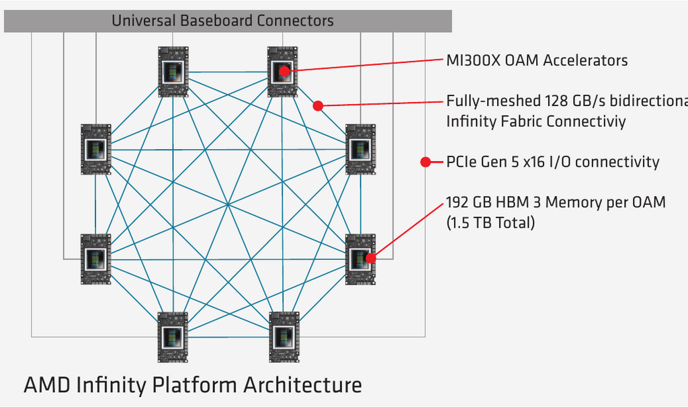
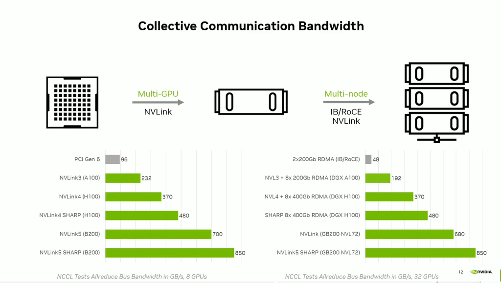
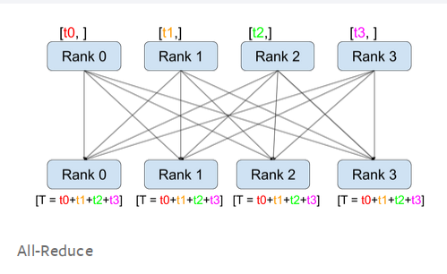
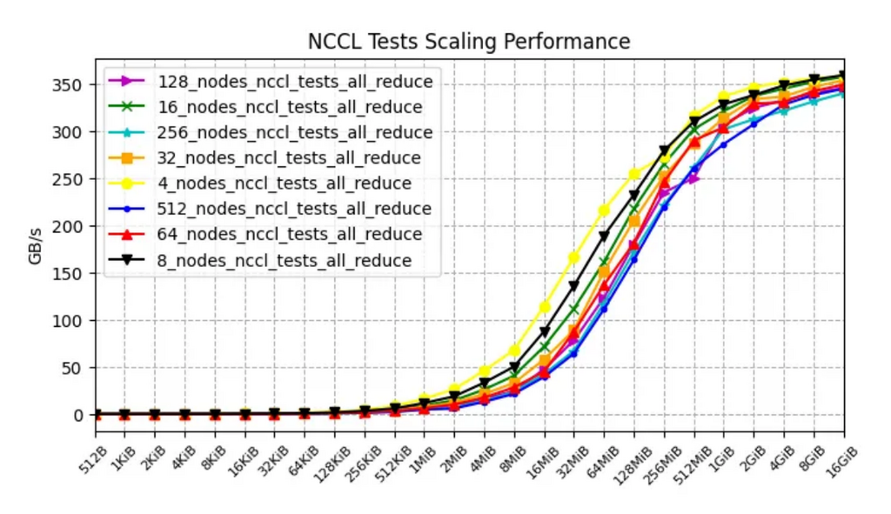
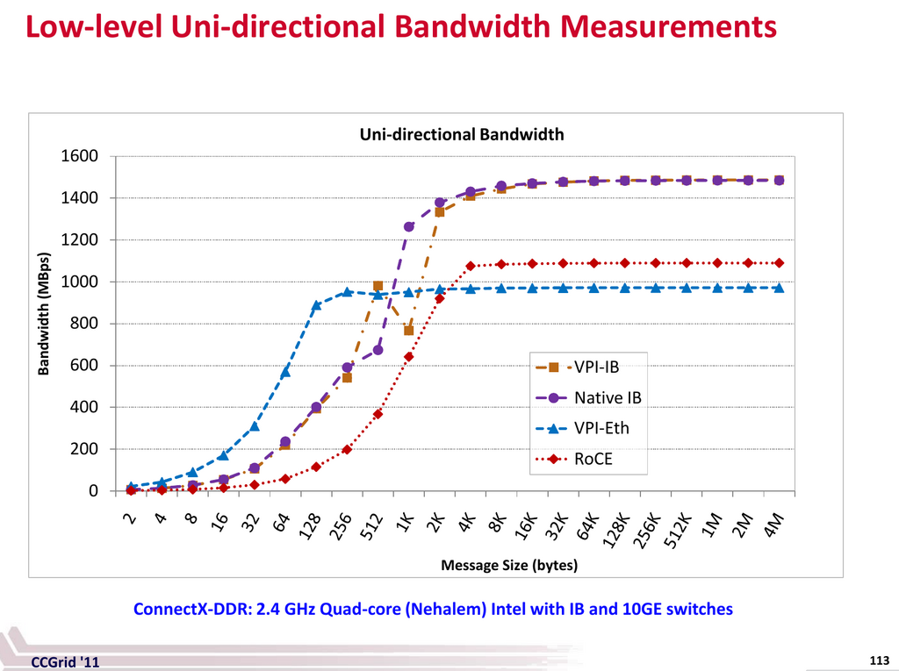
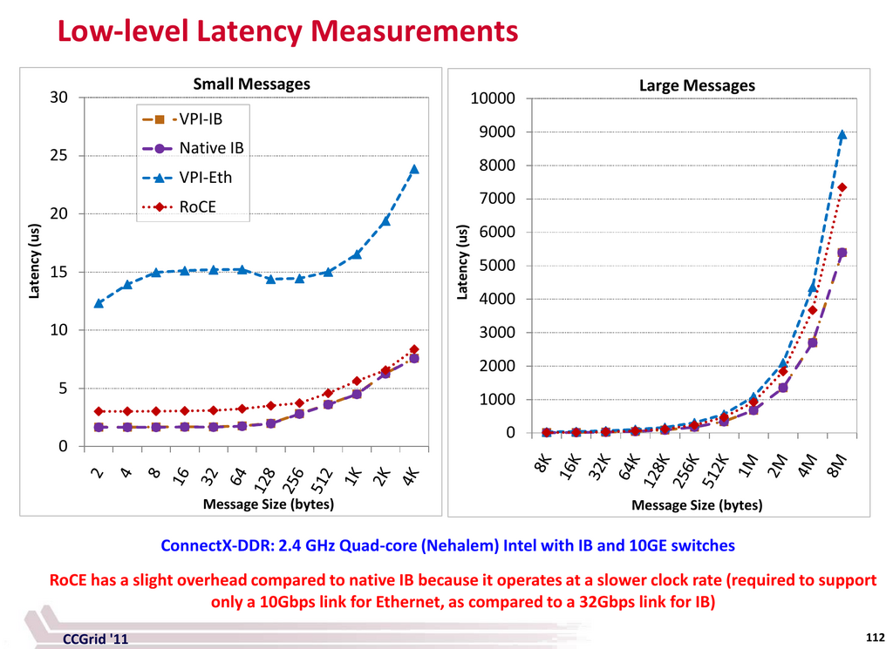

Interconnect Hardware: NVLink, InfiniBand, RoCE, EFA and More
Prerequisites
This chapter is the hardware catalogue for the links that carry collective traffic. The general networking ideas behind it are taught earlier. It only adds the products, their numbers and how they behave when measured.
- Toolkit: reading shell commands and their output,
git clone+make(hownvbandwidthandnccl-testsget built). - Computer architecture: units and the classic mistakes, bandwidth vs latency, NUMA, and buses and interconnects (PCIe, DMA, GPUDirect, a first look at NVLink and NVSwitch).
- Linux and the OS: environment variables. Every
NCCL_*setting below is one. - Concurrency: overlapping copy and compute. Copy engines and comms/compute overlap both build on it.
- Networking, which this chapter leans on most:
- Units: reading spec sheets without getting fooled: bits vs bytes, per direction vs both directions, aggregate vs per link.
- Data center networking: leaf-spine, fat-tree, oversubscription and ECMP.
- HPC networking: RDMA, InfiniBand, RoCE, EFA: what RDMA removes, HCAs, the subnet manager, verbs and queue pairs, PFC/ECN, GPUDirect RDMA, and EFA's SRD and libfabric.
- Inside the node: PCIe generations, NVLink/NVSwitch,
nvidia-smi topo -mand NCCL's P2P/SHM/NET transports. - Collective communication: an intuitive introduction: what all-reduce, all-gather and reduce-scatter compute, with one ring all-reduce done by hand.
- Distributed systems: collectives and data parallel vs model parallel, which gives one-paragraph versions of DDP, ZeRO/FSDP, tensor and pipeline parallelism.
- Accelerators: the chips themselves (H100, B200, MI300X, Gaudi, Trainium, TPU, Ascend), their TFLOPS and HBM.
- GPU execution model: SMs and kernels. The
_smvs_cecopy distinction below assumes them. - The GPU node software stack: the software for this hardware. That covers Fabric Manager, NVLink and topology checks, perftest, NCCL network plugins, the NCCL environment variables an operator sets and nccl-tests.
Forward links, for later chapters this one points into but does not depend on:
- Collective communication internals derives why a collective costs what it costs: the alpha-beta model, ring/tree/hierarchical algorithms,
algbwvsbusbw, NVLS and IB SHARP byte counts, NCCL protocols. This chapter quotes those results and links to them rather than re-deriving them. - Measuring and debugging the network explains how to run and read
nccl-tests,torch-dist-bench.py,nvbandwidthandp2pBandwidthLatencyTest, all of which produced numbers quoted here. - Training arithmetic and model parallelism derivations cover FLOPs, MFU and memory per parameter, and the exact traffic each parallelism generates.
Introduction
It is not enough to buy or rent expensive accelerators. To train and serve models fast you also need storage IO (storage and data), CPUs (computer architecture) and the network to be fast enough to "feed the accelerator furnace". If any of them can't keep up, the accelerators sit underutilized: money is lost, training takes longer, inference throughput drops. Any of these can be the bottleneck, but during training (assuming your DataLoader keeps up) it is most often the network.
If your model fits on a single accelerator, you have little to worry about. Most models today don't. LLMs and VLMs need several accelerators to load, multiple compute nodes to train, and sometimes multiple nodes even for inference.
Most compute nodes contain 8 accelerators. Some contain 4, others 16 or more, and a few recent designs put one super-accelerator in a node. While a model spans several accelerators but stays inside one node, the only network you care about is the fast intra-node one. Once it needs several nodes, fast inter-node networking becomes the key. That is the usual situation in training, because extra replicas on more nodes speed it up.
The two halves have names you will hear constantly:
- Scale-up networking (intra-node): the fabric among the accelerators of one node or one NVLink domain. Examples are NVLink/NVSwitch, AMD Infinity Fabric, Google ICI, AWS NeuronLink and Huawei UB Link. It is short-range, very fast, and usually proprietary.
- Scale-out networking (inter-node): NICs and switches joining nodes into a cluster. Examples are InfiniBand, RoCE Ethernet, AWS EFA, HPE Slingshot and Omni-Path. It is longer-range and slower per accelerator, and it reaches thousands of nodes.
This chapter covers both kinds of hardware and gives their theoretical bandwidths and the measured ones. It then works through the part that surprises most people: how the two fabrics interact during a collective.
How to read the tables in this chapter
Spec tables go stale fast, so every table here follows the same conventions.
- Unidirectional GBps (gigabytes per second, one direction) is the unit for intra-node tables and for per-node inter-node totals. Where a vendor publishes only a bidirectional figure, it is halved. Where a vendor doesn't say which it is, the rule is to assume the bigger, duplex number and halve it. The directionality trap below explains why.
- Gbps (gigabits per second) is used for individual NIC, port and lane rates, because that is how they are sold. 1GBps = 8Gbps.
- Each table is split into Generally available (you can buy or rent it) and Announced, availability not confirmed (roadmap, sampling, or a spec with no product, or a vendor page that names the product but gives no availability). A row moves up once availability is confirmed.
- Dates such as "as of 2026-07-28" record when the row was checked against the vendor page. Treat any number older than a year as a pointer, not a fact.
Many derived columns below are plain arithmetic: lane rate times lanes times links, NICs times rate divided by 8, and so on. Here they are recomputed in one script, so you can see where each number comes from and check a new spec sheet the same way:
# spec_tables.py - recompute the derived columns of this chapter's spec tables from their inputs
# NVLink: per-direction GBps = lane rate (GBps) x lanes per link x links
nvlink = {"NVLink 1": (2.50, 8, 4), "NVLink 2": (3.125, 8, 6), "NVLink 3": (6.25, 4, 12),
"NVLink 4": (12.50, 2, 18), "NVLink 5": (25.00, 2, 18)}
for name, (lane, lanes, links) in nvlink.items():
uni = lane * lanes * links
print(f"{name}: {lane} x {lanes} x {links} = {uni:6.1f} GBps uni-dir, {2*uni:6.1f} duplex")
# nvidia-smi nvlink -s reports the raw signalling rate per link; the sum overshoots the spec
for gpu, per_link, spec in [("B200", 53.125, 900), ("H100", 26.5625, 450)]:
raw = 18 * per_link
print(f"{gpu}: 18 x {per_link} = {raw} GBps raw, spec {spec} -> ratio {spec/raw:.4f}")
# AMD Infinity Fabric: all-to-all = per-peer link x 7 peers on an 8-GPU board
for gpu, link in [("MI355X/MI350X", 76.5), ("MI325X/MI300X", 64), ("MI250X", 50)]:
print(f"{gpu}: {link} x 7 = {link*7} GBps all-to-all, peer-to-peer only {link}")
# Trainium2: 4 intra-node neighbours at 128 GBps + 2 inter-node neighbours at 64 GBps
print("Trainium2 all-to-all:", 128 * 4 + 64 * 2, "GBps; intra-instance only:", 128 * 4)
# InfiniBand: generation names a lane rate; a full-width port is 4 lanes
ib = {"EDR": 25, "HDR": 50, "NDR": 100, "XDR": 200, "GDR": 400, "LDR": 800}
for links in (1, 4, 8, 12):
print(f"{links:2}x lanes: " + " ".join(f"{g}={r*links}" for g, r in ib.items()))
# node table: total uni-dir GBps = interfaces x rate(Gbps) / 8
nodes = [("DGX B300 XDR", 8, 800), ("EFA v4 P6-B300", 16, 400), ("Gaudi3", 24, 200),
("DGX H100 NDR", 8, 400), ("EFA v2 P5", 32, 100), ("EFA v1 P4d", 4, 100)]
for name, nics, rate in nodes:
print(f"{name:15}: {nics:2} x {rate:3} Gbps / 8 = {nics*rate/8:5.0f} GBps per node")
NVLink 1: 2.5 x 8 x 4 = 80.0 GBps uni-dir, 160.0 duplex
NVLink 2: 3.125 x 8 x 6 = 150.0 GBps uni-dir, 300.0 duplex
NVLink 3: 6.25 x 4 x 12 = 300.0 GBps uni-dir, 600.0 duplex
NVLink 4: 12.5 x 2 x 18 = 450.0 GBps uni-dir, 900.0 duplex
NVLink 5: 25.0 x 2 x 18 = 900.0 GBps uni-dir, 1800.0 duplex
B200: 18 x 53.125 = 956.25 GBps raw, spec 900 -> ratio 0.9412
H100: 18 x 26.5625 = 478.125 GBps raw, spec 450 -> ratio 0.9412
MI355X/MI350X: 76.5 x 7 = 535.5 GBps all-to-all, peer-to-peer only 76.5
MI325X/MI300X: 64 x 7 = 448 GBps all-to-all, peer-to-peer only 64
MI250X: 50 x 7 = 350 GBps all-to-all, peer-to-peer only 50
Trainium2 all-to-all: 640 GBps; intra-instance only: 512
1x lanes: EDR=25 HDR=50 NDR=100 XDR=200 GDR=400 LDR=800
4x lanes: EDR=100 HDR=200 NDR=400 XDR=800 GDR=1600 LDR=3200
8x lanes: EDR=200 HDR=400 NDR=800 XDR=1600 GDR=3200 LDR=6400
12x lanes: EDR=300 HDR=600 NDR=1200 XDR=2400 GDR=4800 LDR=9600
DGX B300 XDR : 8 x 800 Gbps / 8 = 800 GBps per node
EFA v4 P6-B300 : 16 x 400 Gbps / 8 = 800 GBps per node
Gaudi3 : 24 x 200 Gbps / 8 = 600 GBps per node
DGX H100 NDR : 8 x 400 Gbps / 8 = 400 GBps per node
EFA v2 P5 : 32 x 100 Gbps / 8 = 400 GBps per node
EFA v1 P4d : 4 x 100 Gbps / 8 = 50 GBps per node
How to read it: each line is one table row rebuilt from its inputs. If a number in a table below disagrees with this arithmetic, the table is wrong. The script is pure Python and was run with python3. Each section below explains its own inputs.
Glossary and concepts
You can skip this list and come back to it when a term shows up. Terms already taught in Networking (RDMA, HCA, verbs, PFC/ECN, SRD, libfabric) are repeated in one line each so this list stands on its own.
- ALU: Arithmetic Logic Unit. The adders and multipliers inside a switch that let SHARP reduce data in the network.
- C2C: chip-to-chip, as in NVLink-C2C.
- CPO: co-packaged optics. The optical engine sits inside the switch package instead of in a pluggable transceiver. See Co-packaged silicon photonics.
- DMA: Direct Memory Access. A hardware engine copies memory without a CPU core moving each byte.
- EDR, HDR, NDR, XDR, GDR, LDR: InfiniBand per-lane data-rate generations. See InfiniBand.
- EFA: Elastic Fabric Adapter, AWS's inter-node network. See EFA.
- GA: Generally Available. The product can actually be bought or rented, as opposed to announced, sampling, or only specified.
- GDR: an InfiniBand per-lane data-rate generation, a roadmap target at 400Gbps per lane, as in the
InfiniBand GDR examplerow of the inter-node table. Beware: NCCL uses the same three letters for GPUDirect RDMA, the direct path between a NIC and accelerator memory, as inNCCL_NET_GDR_LEVEL. The two are unrelated. The clash comes from two ecosystems coining names independently, the IBTA for the link generation and NVIDIA for the data path. - HCA: Host Channel Adapter, the InfiniBand name for a NIC.
- HPC: High-Performance Computing, the supercomputing world that ML clusters borrowed most of their networking from.
- IB: InfiniBand.
- IBTA: InfiniBand Trade Association, the body that standardizes InfiniBand.
- ICI: Inter-Chip Interconnect, Google's scale-up fabric between TPU chips.
- MFU: Model FLOPs Utilization, achieved FLOPS divided by peak FLOPS. For example
mfu=0.5at half precision on an A100 means getting 156TFLOPS, since peak half-precision is 312TFLOPS and 156/312=0.5. Training arithmetic treats it properly. - NCCL: NVIDIA Collective Communications Library, the library PyTorch uses for collectives on NVIDIA GPUs. AMD's equivalent is RCCL.
- NIC: Network Interface Card.
- NVL72: an NVLink domain of 72 accelerators. NVL8 and NVL36 are 8 and 36.
- NVLS: NVLink SHARP, the NCCL algorithm that does the reduction inside the NVSwitch.
- NVLSTree: the NCCL algorithm that combines
NVLSinside each node with a tree across nodes. Multi-node only. - OPA: Omni-Path Architecture. OPX: Omni-Path Express, its current software stack. See Omni-Path.
- OSFP: Octal Small Form Factor Pluggable, an 8-lane transceiver cage, the socket a pluggable optical or copper module plugs into.
- P2P: peer-to-peer, traffic between exactly two accelerators as opposed to all-to-all.
- QSFP-DD: Quad Small Form Factor Pluggable Double Density, another transceiver cage (8 lanes in a QSFP-sized footprint).
- RC: Reliable Connection, the default connection type in verbs-based tools. It is connection-oriented, with reliable in-order delivery.
- RDMA: Remote Direct Memory Access. See RDMA networking.
- RMA: Remote Memory Access, libfabric's name for one-sided read/write operations. It is the same class of operation as an RDMA write.
- RoCE: RDMA over Converged Ethernet.
- SerDes: serializer/deserializer, one electrical lane of a port. Several SerDes lanes make up one port.
- SHARP: Scalable Hierarchical Aggregation and Reduction Protocol, in-network reduction. See SHARP.
- SRD: Scalable Reliable Datagram, AWS EFA's transport. It delivers reliably but does not preserve message order, unlike RC.
- SuperNIC: NVIDIA's name for its recent high-rate network adapters.
- TCPX, TCPXO: Google Cloud's GPUDirect transports for A3 machine types. See GPUDirect-TCPX.
- UEC: Ultra Ethernet Consortium, the body behind the Ultra Ethernet standard that AI NICs target.
- VPC: Virtual Private Cloud, the general-purpose cloud network, as opposed to the accelerator fabric.
- xGMI: Socket to Socket Global Memory Interface, AMD's name for Infinity Fabric links between packages.
- XGS: the cross-datacenter variant of Spectrum-X.
Speed-related:
- Adaptive routing: an improvement over static routing that allows packets to arrive out of order. Each switch load-balances packets across its outputs, which spreads the network load better. Static routing pins a flow to one path, so two big flows can collide on one link (ECMP shows the effect).
- algbw: algorithm bandwidth, the payload size divided by the elapsed time.
- busbw: bus bandwidth,
algbwscaled by a per-collective correction factor so that it reflects the hardware bottleneck rather than the number of ranks. For all-reduce the factor is 2(n-1)/n. algbw vs busbw derives it. Read everybusbwin this chapter as "comparable to a per-direction link speed, for a ring". - Bidirectional, duplex: transmission in both directions A <-> B at once, typically 2x the one-direction (unidirectional) rate.
- Bisection width: the minimum number of links you must cut to divide the network into two parts, not necessarily equal. The bandwidth of those links is the bisection bandwidth, often used as a measure of real network capacity and sometimes called the worst-case network capacity. Here is a good answer explaining it and related concepts. You rarely need more than the definition, since your provider has almost certainly fixed the topology already.
- GBps, GB/s: gigabytes per second (1GBps = 8Gbps) through a channel.
- Gbps, Gb/s: gigabits per second (1Gbps = 1/8GBps) through a channel.
- GT/s: gigatransfers per second, the number of data-transferring operations per second. PCIe lane rates are quoted this way.
- Unidirectional: transmission in one direction, A -> B.
Pay close attention in every section below to the fact that 1GBps = 8Gbps.
Unidirectional vs Bidirectional (Duplex)
Most benchmarking and bandwidth-measurement tools report unidirectional bandwidth. So be careful when comparing a measurement with a spec, because the spec is usually duplex, typically ~2x the unidirectional number.
The rule of thumb: if you measure about 40% of the advertised speed, check whether the advertisement was duplex. If it was, halve it, and your measurement becomes about 80%, which is what a healthy system delivers.
A case study from Stas Bekman: for a while he couldn't understand why the nccl-tests all_reduce benchmark on an A100 node with an advertised 600GBps intra-node speed gave only 235GBps (40%). Horace He pointed out that the right comparison is the unidirectional 300GBps, against which the measurement is 78%, close to the ~80% expected.
That ~80% expectation holds on newer hardware too. On a node of 8x H200 (NVLink 4, NVSwitch-connected), a pairwise copy measures 396.40GBps unidirectional against the 450GBps spec (88%), and 783.73GBps duplex against 900GBps (87%). On this fabric running both directions at once costs almost nothing. The measurement uses nvbandwidth, whose build and use are covered in nvbandwidth:
./nvbandwidth -i 10 -t device_to_device_memcpy_write_ce # 396.40 GB/s per pair
./nvbandwidth -i 10 -t device_to_device_bidirectional_memcpy_write_ce # 783.73 GB/s per pair, total
How to read the commands: nvbandwidth is NVIDIA's copy-bandwidth benchmark. -t picks the testcase and -i the number of timed iterations. The _ce suffix means the copy runs on the GPU's copy engines, the DMA engines that move data without using the SMs. The _sm testcases do the same copy with a kernel instead. The bidirectional testcase prints Write1, Write2 and a combined total matrix. Read the total rather than doubling one direction.
A pairwise copy is the right instrument for this comparison because it moves bytes and nothing else. A collective on the same hardware can report more than the unidirectional spec. That is a different effect entirely, explained in SHARP.
Here every measured-vs-spec ratio quoted in this chapter is recomputed in one place. Notice how consistently healthy hardware lands at 80-90%:
# efficiency.py - measured / spec for every pairwise-copy measurement quoted in this chapter
rows = [
("A100 NVLink 3, nccl-tests all-reduce busbw (case study)", 235, 600), # vs the duplex number
("A100 NVLink 3, same, vs the unidirectional spec", 235, 300),
("H200 NVLink 4, nvbandwidth uni-dir copy", 396.40, 450),
("H200 NVLink 4, nvbandwidth duplex copy (total)", 783.73, 900),
("H200 PCIe 5 x16, host->device", 55.43, 63),
("H200 PCIe 5 x16, device->host", 55.06, 63),
("GB300 NVLink-C2C, avg of H2D 359 and D2H 377", (359 + 377) / 2, 450),
("GB300 NVLink-C2C, bidirectional (avg of 175, 171) x 2", (175 + 171) / 2 * 2, 900),
("A100 p2pBandwidthLatencyTest", 274, 300),
("H100 p2pBandwidthLatencyTest", 376, 450),
("GB200 p2pBandwidthLatencyTest", 746, 900),
]
for name, measured, spec in rows:
print(f"{name:58} {measured:7.2f} / {spec:4} = {measured/spec:4.0%}")
A100 NVLink 3, nccl-tests all-reduce busbw (case study) 235.00 / 600 = 39%
A100 NVLink 3, same, vs the unidirectional spec 235.00 / 300 = 78%
H200 NVLink 4, nvbandwidth uni-dir copy 396.40 / 450 = 88%
H200 NVLink 4, nvbandwidth duplex copy (total) 783.73 / 900 = 87%
H200 PCIe 5 x16, host->device 55.43 / 63 = 88%
H200 PCIe 5 x16, device->host 55.06 / 63 = 87%
GB300 NVLink-C2C, avg of H2D 359 and D2H 377 368.00 / 450 = 82%
GB300 NVLink-C2C, bidirectional (avg of 175, 171) x 2 346.00 / 900 = 38%
A100 p2pBandwidthLatencyTest 274.00 / 300 = 91%
H100 p2pBandwidthLatencyTest 376.00 / 450 = 84%
GB200 p2pBandwidthLatencyTest 746.00 / 900 = 83%
How to read it: the first two lines are the same measurement against the wrong and the right denominator. The one outlier at 38% is a real hardware limit, explained in NVLink-C2C, not a units mistake. Each of these measurements is discussed in its own section below.
Reading a spec sheet: the directionality trap
When you read a spec online and it doesn't state the direction explicitly, go and find out. Stas had to dig through many documents to fill in some of the tables below, because some vendors omit this crucial detail, and he even edited a few Wikipedia pages to add it. Vendors prefer the bigger number, so they almost always quote duplex, typically 2x the unidirectional figure. When in doubt, assume duplex and halve it. That is the convention used in every table here, and each place it was applied is called out.
Cluster networks
Each node of a cluster sits on three separate networks, and each runs at a very different speed:
Internet / storage / scheduler
|
frontend (1 NIC, 100-400Gbps, TCP/IP)
|
+--------------------- node -----------------------+
| GPU0 .. GPU7 == NVLink/NVSwitch (intra-node) == | backend, scale-up
| | | |
| NIC0 .. NIC7 -- InfiniBand / RoCE / EFA ------- |-- backend, scale-out (other nodes)
| BMC -- 1Gbps Ethernet -------------------------- |-- out-of-band (management)
+--------------------------------------------------+
How to read the sketch: a node is one box with three separate cable paths leaving it. Only the backend carries collectives. A schematic, not a real wiring diagram.
Frontend networking
The frontend network carries the Internet connection (downloading Python packages, offloading to cloud storage), distributed network storage (checkpoints and datasets) and orchestration traffic (SLURM and Kubernetes). As of 2026-08 a typical node has a single 100-400Gbps frontend connection.
Not every cluster has external Internet access. Many HPC environments only allow it from special CPU-only nodes.
Backend networking
The backend network connects GPUs to each other, which is what lets training and inference scale beyond one accelerator (all-reduce, all-gather and the other collectives). It is the most important network in an AI cluster. It is usually InfiniBand or RoCEv2 Ethernet, and it splits into intra-node and inter-node networking. GPUs on the same node can normally talk to each other faster than to GPUs on other nodes.
Typical top unidirectional speeds as of 2026-08:
- intra-node: ~900GBps per accelerator (NVLink 5, as on B200/B300)
- inter-node: 100GBps per accelerator, or 800GBps per node (8x ConnectX-8, as on DGX B300 XDR)
So the links are about an order of magnitude apart per accelerator. That ratio has held for several generations, because both sides keep doubling together. The gap you actually measure with a collective is much smaller, for reasons explained in Inter-node speed depends on intra-node speed.
Each accelerator has at least one backend connection, and sometimes several, especially when lower-bandwidth NICs are used.
Not every provider matches the industry-standard speeds. On some, the inter-node network can be up to 10x slower. Always check what you get. Getting compute covers how to ask.
Out-Of-Band networking
The Out-Of-Band (OOB) network bootstraps the backend network, monitors node health, re-images nodes remotely, and so on. It talks to the node's BMC (baseboard management controller, the small always-on computer that can power-cycle the node). It is typically a single slow 1Gbps Ethernet connection.
RDMA networking
Remote Direct Memory Access is DMA across nodes. It moves data between machines without going through the local processor, the OS kernel and the caches, all of which TCP/IP uses. What RDMA removes walks through the two data paths side by side. The three main implementations are:
- InfiniBand
- RDMA over Converged Ethernet (RoCE), the InfiniBand transport carried over Ethernet. RoCEv2 wraps it in UDP/IP so it can be routed.
- iWARP, RDMA over TCP. It is rare in ML clusters.
Here is a good overview article comparing RDMA with TCP/IP. The operational side of RoCE (PFC, ECN, DCQCN and why packet loss hurts RDMA so much) is in RoCE and lossless Ethernet, and the node-side setup is in RoCE in one page.
Intra-node networking
This is also called scale-up networking. Several platforms provide it:
- Generic: PCIe
- NVIDIA: NVLink and NVSwitch, plus NVLink-C2C between CPU and GPU
- AMD: Infinity Fabric
- Intel: Gaudi2, Gaudi3
- AWS: NeuronLink (Trainium)
- Google: ICI (TPU)
- Huawei: UB Link (Ascend)
- The open-standard attempt: UALink
Two numbers describe a scale-up fabric, and they are not the same thing:
- all-to-all bandwidth: what one accelerator can push when it talks to all its peers at once. It is the sum over all its links.
- peer-to-peer bandwidth: what one accelerator can push to one other accelerator.
With a switch in the middle (NVSwitch) they are equal, because one pair can use every link. With point-to-point wiring (AMD, Trainium, TPU), each pair has its own link, so peer-to-peer is only a fraction of all-to-all.
switched (NVSwitch): every GPU has all its links point-to-point (Infinity Fabric): one
into the switch, so GPU0->GPU1 can use all of them dedicated link per pair, GPU0->GPU1 uses 1/7
GPU0 ===\ /=== GPU4 GPU0 ---- GPU1
GPU1 ====[ NVSwitch(es) ]==== GPU5 | \ / |
GPU2 ====[ ]==== GPU6 | \/ | ... every pair
GPU3 ===/ \=== GPU7 | /\ | has its own link
GPU2 ---- GPU3
All-to-all bandwidth
Intra-node unidirectional theoretical all-to-all peak bandwidth, sorted by bandwidth:
Generally available:
| Interconnect | Accelerator | GBps | Notes |
|---|---|---|---|
| NVIDIA NVLink 5 | B200, B* | 900.0 | 1 |
| AWS NeuronLink 3 | Trainium2 | 640.0 | 2 |
| Intel | Gaudi3 | 600.0 | |
| Google ICI | TPU7x | 600.0 | 4 |
| AMD XGMI | MI355X | 535.5 | |
| AMD XGMI | MI350X | 535.5 | |
| NVIDIA NVLink 4 | H100, H* | 450.0 | 1 |
| AMD XGMI | MI325X | 448.0 | |
| AMD XGMI | MI300X | 448.0 | |
| AMD XGMI | MI250X | 350.0 | |
| NVIDIA NVLink 3 | A100 | 300.0 | 1 |
| Intel | Gaudi2 | 300.0 | |
| PCIe 5 | 63.0 | ||
| PCIe 4 | 31.0 |
Announced, availability not confirmed:
| Interconnect | Accelerator | GBps | Notes |
|---|---|---|---|
| Huawei UB Link | Ascend 950DT | 840.0 | 5 |
| NVIDIA NVLink 6 | Rubin | 1500.0 | 1 |
| PCIe 6 | 121.0 | 3 |
Notes:
- NVSwitch runs at the NVLink speed of its generation. See NVSwitch.
- AWS publishes
NeuronLink-v3 ... 1.28 TB/sec bandwidth per chipfor Trainium2 without saying which direction, so it is halved here per the directionality convention. AWS publishes neither a per-link rate nor a link count, so Trainium2 can't be placed in the peer-to-peer table. NeuronLink v3 reconstructs the 640 from the torus topology. - PCIe 6 is under
Announced, availability not confirmedbecause no shipping accelerator attaches at Gen6 as of 2026-07-31. Current parts are Gen5 x16: NVIDIA H200 SXM listsPCIe Gen5, and AMD MI350X/MI355X listPCIe 5.0 x16. So 63GBps is still the ceiling for accelerator-to-accelerator PCIe traffic. Gen6 already ships on the NIC side. NVIDIA markets ConnectX-8 as bringing "PCIe Gen6 connectivity in a single device", which is what lets one adapter feed 800Gbps. - Google publishes a "Bidirectional inter-chip interconnect (ICI) bandwidth per chip (GBps)" of 1200 for TPU7x, halved here. The peer-to-peer figure is the per-axis one, "bi-directional bandwidth of 200 GBps per axis", i.e. 100 unidirectional. Six neighbours in the 3D torus at 200 each is exactly the 1200 total, so the two figures corroborate each other. Google documents TPU7x fully but doesn't state an availability stage. See TPU7x.
- Huawei publishes a per-cabinet total interconnect bandwidth of up to 64 x 1.68TBps bidirectional for the Atlas 950 SuperPoD. That is 1.68TBps bidirectional per accelerator, halved here. Only the Chinese pages carry it; the English ones state no per-NPU figure. Peer-to-peer is unknown, so there is no row in the peer-to-peer table. The row sits under "announced" because Huawei publishes no availability for the Ascend 950DT anywhere reachable. Its own English site serves a plain downloader only a navigation shell, in which
950DTdoesn't appear at all. China-only distribution is not the reason. Once availability is confirmed, the row belongs with the available hardware, annotated as China-only. See UB Link.
Peer-to-peer bandwidth
Some vendors' all-to-all and peer-to-peer (GPU-to-GPU) bandwidths are the same and some aren't. For example, AMD MI300X/MI325X have 64GBps peer-to-peer but 448GBps in total on an 8-accelerator board, since 64 \times 7=448. Likewise MI350X/MI355X have 76.5GBps peer-to-peer and 535.5GBps all-to-all, since 76.5 \times 7=535.5.
Intra-node unidirectional theoretical peer-to-peer peak bandwidth, sorted by bandwidth:
Generally available:
| Interconnect | Accelerator | GBps |
|---|---|---|
| NVIDIA NVLink 5 | B200, B* | 900.0 |
| Intel | Gaudi3 | 600.0 |
| NVIDIA NVLink 4 | H100, H* | 450.0 |
| NVIDIA NVLink 3 | A100 | 300.0 |
| Intel | Gaudi2 | 300.0 |
| Google ICI | TPU7x | 100.0 |
| AMD XGMI | MI355X | 76.5 |
| AMD XGMI | MI350X | 76.5 |
| AMD XGMI | MI325X | 64.0 |
| AMD XGMI | MI300X | 64.0 |
| PCIe 5 | 63.0 | |
| AMD XGMI | MI250X | 50.0 |
| PCIe 4 | 31.0 |
Announced, availability not confirmed:
| Interconnect | Accelerator | GBps |
|---|---|---|
| NVIDIA NVLink 6 | Rubin | 1500.0 |
| PCIe 6 | 121.0 |
PCIe has the same number in both tables, but for the opposite reason to NVLink:
- NVLink matches because NVSwitch lets a single pair light up every link, so you get the whole fabric either way.
- PCIe matches because an accelerator has just one x16 host link, which is the ceiling whether it talks to one peer or seven.
Unlike NVLink or Infinity Fabric, where every pair has the same fabric path, the PCIe number also depends on where the two devices sit. Under the same switch, across the root complex, and across CPU sockets are three different paths, and nvidia-smi topo -m tells you which one a pair uses (see NVLink below). So treat the PCIe rows as the best case for a well-placed pair, not as a figure that holds for any two devices in the node.
The PCIe rows assume an x16 attachment, which is what current accelerators use. NVIDIA H200 SXM lists PCIe Gen5 at 128GBps duplex, AMD MI350X/MI355X list PCIe 5.0 x16, and A100 is Gen4 x16. If a part is attached at x8, halve the figure. And as of 2026-07-31 no shipping accelerator attaches at Gen6, so 63GBps is the real ceiling for accelerator-to-accelerator PCIe traffic today. The PCIe 6 row is there for the platforms that will. Gen6 is already shipping elsewhere in the node: ConnectX-8's Gen6 host link is what lets one adapter feed 800Gbps (100GBps), since Gen5 x16 tops out at 63GBps.
When peer-to-peer bandwidth is much lower than all-to-all, an application that doesn't use all the accelerators of the node gets much less bandwidth. If those accelerators have to communicate with each other, performance suffers.
To check this, torch-dist-bench.py was run on an 8x AMD MI300X node with a 4GiB payload. The busbw measurements were:
- 2 GPUs: 47.671GBps
- 8 GPUs: 312.912GBps
So 2 GPUs were 6.5x slower than 8. The script and how to run it are covered in torch-dist-bench.
The practical rule on point-to-point fabrics: if you deploy TP=2, TP=4, or ZeRO-DP/FSDP over 2 or 4 GPUs, in training or inference, the network will become a bottleneck. TP=1, TP=8, ZeRO-DP/FSDP over all 8 GPUs, or DP over 1-GPU replicas have no such problem. (TP is tensor parallelism and ZeRO-DP/FSDP is sharded data parallelism. Data parallel vs model parallel has the short versions, and model parallelism derivations has the traffic each one generates.)
The following sections go through each technology in detail.
PCIe
PCIe is the high-speed serial expansion bus found even in the cheapest desktop. Buses and interconnects introduces it, and PCIe in Networking derives the per-generation numbers from lane rate and encoding. The largest slot, x16, has 16 lanes, and smaller slots have fewer (x1 is one lane).
Generally available:
| Interconnect | Lane/ Direction (GBps) |
Lanes | Uni-dir. (GBps) |
Duplex (GBps) |
|---|---|---|---|---|
| PCIe 4 | ~2.0 | 16 | 31 | 62 |
| PCIe 5 | ~4.0 | 16 | 63 | 126 |
| PCIe 6 | ~7.5 | 16 | 121 | 242 |
Announced, availability not confirmed:
| Interconnect | Lane/ Direction (GBps) |
Lanes | Uni-dir. (GBps) |
Duplex (GBps) |
|---|---|---|---|---|
| PCIe 7 | ~15.0 | 16 | 242 | 484 |
| PCIe 8 | ~30.0 | 16 | 484 | 968 |
(The PCIe 6 row here is the spec. It sits under "generally available" because Gen6 products exist, NICs included. It sits under "announced" in the accelerator tables above because no accelerator attaches at Gen6 yet. The PCIe 6 figure of 121 also includes the FLIT-mode framing overhead that the networking chapter's back-of-envelope 128 ignores.)
A released specification is not shipping silicon. As of 2026-07-30 PCI-SIG lists PCI Express Base Specification Revision 7.0 as released, while PCIe 8.0 exists only as a members-only draft, targeted for 2028. Even a finished spec takes years to reach products: PCIe 6.0 hardware didn't launch until August 2025, about three years after its spec was done. Read the last rows as where the standard is heading, not as something you can buy.
Compared with the latest generation of any other intra-node technology below, PCIe is usually an order of magnitude behind.
The table above is spec. What a PCIe link actually delivers is a separate question that nobody seems to publish, so here is a measurement. On a node of 8x H200, where each accelerator has its own PCIe 5 x16 link, nvbandwidth reports 55.43GBps host-to-device and 55.06GBps device-to-host. That is 88% and 87% of the 63GBps row. The eight links came out within 0.10GBps of each other, and nvbandwidth reported a coefficient of variation of 0.00.
To reproduce, first confirm the generation and width, since the 63GBps figure only applies to PCIe 5 at x16:
nvidia-smi --query-gpu=index,pcie.link.gen.current,pcie.link.width.current --format=csv
You want every row to read 5, 16. A lower generation or width means the link trained down (the Linux lspci check shows the same from the OS side). Note that some GPUs drop the link generation at idle to save power, so query under load. Then run:
./nvbandwidth -i 10 -t host_to_device_memcpy_ce
./nvbandwidth -i 10 -t device_to_host_memcpy_ce
A caveat: host_to_device_memcpy_ce measures whatever the host-to-device path happens to be on that platform, so read it against the fabric the machine actually uses. On an x86 host with PCIe-attached SXM accelerators that path is PCIe, which is what the 88% above refers to. On a Grace-Blackwell system the very same testcase measures NVLink-C2C instead and reports several hundred GBps. Same command, different fabric, an order of magnitude apart.
NVLink
NVLink is a wire-based, serial, multi-lane, short-range communications link developed by NVIDIA. NVIDIA's What Is NVLink blog post gives more background. The Wikipedia page is hard to follow, and as of 2026-08 some of its numbers look wrong and NVIDIA doesn't appear to maintain it, so this section lays the generations out from first principles.
An NVLink link is a bundle of lanes. Per-GPU bandwidth is lane rate times lanes per link times links per GPU, which is what spec_tables.py above recomputes. Effective payload rate of intra-node GPU-to-GPU hardware:
Generally available:
| Interconnect | Lane/ Direction (GBps) |
Lanes | Links | Uni-dir. (GBps) |
Duplex (GBps) |
GPU |
|---|---|---|---|---|---|---|
| NVLink 1 | 2.50 | 8 | 4 | 80 | 160 | P100 |
| NVLink 2 | 3.125 | 8 | 6 | 150 | 300 | V100 |
| NVLink 3 | 6.25 | 4 | 12 | 300 | 600 | A100 |
| NVLink 4 | 12.50 | 2 | 18 | 450 | 900 | H100, H200, GH200 |
| NVLink 5 | 25.00 | 2 | 18 | 900 | 1800 | B200, B*, GB* |
Announced, availability not confirmed:
| Interconnect | Lane/ Direction (GBps) |
Lanes | Links | Uni-dir. (GBps) |
Duplex (GBps) |
GPU |
|---|---|---|---|---|---|---|
| NVLink 6 | ? | 2 | 36 | 1500 | 3000 | Rubin |
NVLink 6's per-lane rate is ? because NVIDIA publishes only the per-GPU aggregate (3 TB/s duplex, i.e. 1500 GBps unidirectional). The figures are for the standard Rubin GPU. Rubin CPX and Rubin Ultra are separate parts with their own NVLink.
There is a good overview of the evolution of NVLink 1 to 4 here.
How NVLink compares with the PCIe of the same platform:
- NVIDIA Rubin nodes come with PCIe 6 and NVLink 6, so NVLink is ~12x faster than PCIe.
- NVIDIA Blackwell nodes come with PCIe 6 and NVLink 5, so NVLink is ~7x faster than PCIe.
- NVIDIA Hopper nodes typically come with PCIe 5 and NVLink 4, so NVLink is ~7x faster than PCIe.
nvidia-smi nvlink -s reports the raw per-link signalling rate, and the sum overshoots the advertised aggregate. A B200 lists 18 links at 53.125GBps = 956.25GBps against the advertised 900GBps. An H100 lists 18 links at 26.5625GBps = 478.125GBps against 450GBps. Both give a ratio of 0.9412, which is the encoding overhead, so multiply the sum by ~0.94 to get back to the spec figure (spec_tables.py prints both).
Reading nvidia-smi topo -m
How the cards are interconnected can have a huge impact on total training time. On a node, run:
nvidia-smi topo -m
and it tells you how the GPUs are connected. On a machine with two GPUs connected by NVLink you will most likely see something like:
GPU0 GPU1 CPU Affinity NUMA Affinity
GPU0 X NV2 0-23 N/A
GPU1 NV2 X 0-23 N/A
On a different machine without NVLink you may see:
GPU0 GPU1 CPU Affinity NUMA Affinity
GPU0 X PHB 0-11 N/A
GPU1 PHB X 0-11 N/A
The report includes this legend:
X = Self
SYS = Connection traversing PCIe as well as the SMP interconnect between NUMA nodes (e.g., QPI/UPI)
NODE = Connection traversing PCIe as well as the interconnect between PCIe Host Bridges within a NUMA node
PHB = Connection traversing PCIe as well as a PCIe Host Bridge (typically the CPU)
PXB = Connection traversing multiple PCIe bridges (without traversing the PCIe Host Bridge)
PIX = Connection traversing at most a single PCIe bridge
NV# = Connection traversing a bonded set of # NVLinks
How to read it: the matrix is symmetric, one cell per pair. NV2 in the first report says the two GPUs are connected by 2 NVLinks. PHB in the second shows a typical consumer-level PCIe-plus-host-bridge setup, where traffic goes through the CPU. From fastest to slowest the cells rank NV#, then PIX, PXB, PHB, NODE, SYS. CPU Affinity and NUMA Affinity say which CPU cores and memory node are local to each GPU (NUMA explains why that matters).
Check what connectivity your setup has. Some links make communication between cards faster (NVLink) and others slower (PHB). How much it matters depends on the parallelism you use. If GPUs sync rarely, as in DDP, a slower link matters less. If they exchange messages constantly, as in ZeRO-DP, fast connectivity becomes critical for training speed.
When a matrix is big, a small script that ranks the pairs is easier to read than the raw table. This one takes nvidia-smi topo -m output on stdin and falls back to a built-in sample (a made-up 4-GPU box with two NVLink pairs on two sockets) when nothing is piped in:
# topo_parse.py - classify every GPU pair in `nvidia-smi topo -m` output (pasted or piped in)
import sys
RANK = {"NV": 0, "PIX": 1, "PXB": 2, "PHB": 3, "NODE": 4, "SYS": 5} # best -> worst
sample = """\
GPU0 GPU1 GPU2 GPU3 CPU Affinity NUMA Affinity
GPU0 X NV12 PHB SYS 0-23 0
GPU1 NV12 X SYS PHB 0-23 0
GPU2 PHB SYS X NV4 24-47 1
GPU3 SYS PHB NV4 X 24-47 1
"""
text = (sys.stdin.read() if not sys.stdin.isatty() else "") or sample
lines = [ln.split() for ln in text.splitlines() if ln.strip()]
gpus = [c for c in lines[0] if c.startswith("GPU")]
pairs = {}
for row in lines[1:]:
if not row[0].startswith("GPU"):
continue
for j, cell in enumerate(row[1:1 + len(gpus)]):
a, b = row[0], gpus[j]
if a < b:
pairs[(a, b)] = cell
for (a, b), cell in sorted(pairs.items(), key=lambda kv: RANK["NV" if kv[1].startswith("NV") else kv[1]]):
kind = f"NVLink x{cell[2:]}" if cell.startswith("NV") else cell
print(f"{a}-{b}: {kind}")
worst = max(pairs.values(), key=lambda c: RANK["NV" if c.startswith("NV") else c])
print("slowest pair type:", worst, "- a collective over all GPUs runs at that pair's speed")
$ python3 topo_parse.py < /dev/null
GPU0-GPU1: NVLink x12
GPU2-GPU3: NVLink x4
GPU0-GPU2: PHB
GPU1-GPU3: PHB
GPU0-GPU3: SYS
GPU1-GPU2: SYS
slowest pair type: SYS - a collective over all GPUs runs at that pair's speed
How to read it: on that made-up box, a 2-GPU job on GPU0+GPU1 gets 12 NVLinks, but a 4-GPU job runs its ring through SYS pairs, i.e. across the CPU sockets. On a real node, nvidia-smi topo -m | python3 topo_parse.py (untested on a real node here; the parser expects the GPU rows to come first, which they do). Pairs involving NICs are skipped.
Now the topology of the A100 and H100 nodes.
A100 topology:
$ nvidia-smi topo -m
GPU0 GPU1 GPU2 GPU3 GPU4 GPU5 GPU6 GPU7 CPU Affinity NUMA Affinity
GPU0 X NV12 NV12 NV12 NV12 NV12 NV12 NV12 0-23 0
GPU1 NV12 X NV12 NV12 NV12 NV12 NV12 NV12 0-23 0
GPU2 NV12 NV12 X NV12 NV12 NV12 NV12 NV12 0-23 0
GPU3 NV12 NV12 NV12 X NV12 NV12 NV12 NV12 0-23 0
GPU4 NV12 NV12 NV12 NV12 X NV12 NV12 NV12 24-47 1
GPU5 NV12 NV12 NV12 NV12 NV12 X NV12 NV12 24-47 1
GPU6 NV12 NV12 NV12 NV12 NV12 NV12 X NV12 24-47 1
GPU7 NV12 NV12 NV12 NV12 NV12 NV12 NV12 X 24-47 1
There are 12 NVLinks per pair and 2 NUMA groups (2 CPUs with 24 cores each). Every pair shows all 12 links because the links go into NVSwitches, not to the peer directly.
H100 topology:
$ nvidia-smi topo -m
GPU0 GPU1 GPU2 GPU3 GPU4 GPU5 GPU6 GPU7 CPU Affinity NUMA Affinity
GPU0 X NV18 NV18 NV18 NV18 NV18 NV18 NV18 0-51 0
GPU1 NV18 X NV18 NV18 NV18 NV18 NV18 NV18 0-51 0
GPU2 NV18 NV18 X NV18 NV18 NV18 NV18 NV18 0-51 0
GPU3 NV18 NV18 NV18 X NV18 NV18 NV18 NV18 0-51 0
GPU4 NV18 NV18 NV18 NV18 X NV18 NV18 NV18 52-103 1
GPU5 NV18 NV18 NV18 NV18 NV18 X NV18 NV18 52-103 1
GPU6 NV18 NV18 NV18 NV18 NV18 NV18 X NV18 52-103 1
GPU7 NV18 NV18 NV18 NV18 NV18 NV18 NV18 X 52-103 1
There are 18 NVLinks and 2 NUMA groups (2 CPUs with 52 cores each). Other A100 and H100 nodes may report differently, most often in the number of CPU cores.
NVLink-C2C
NVLink-C2C is the high-bandwidth connection between a CPU and a GPU in the same module: Grace and Hopper on GH200, Grace and Blackwell on GB200 and later, and Vera and Rubin. It replaces PCIe as the host link, so host-device copies, CPU-offloaded optimizer states and similar traffic run over it.
As of 2026-08 there is no official public spec of its speed. A figure of 450GBps unidirectional for GB200 appears in SemiAnalysis's GB200 analysis, half the 900GBps unidirectional of NVLink 5. If you find an official figure, it replaces this one.
Generally available:
| Architecture | Uni-dir. (GBps) |
NVLink (GBps) |
NVLink gen |
|---|---|---|---|
| Grace/Hopper | 450 | 900 | 4 |
| Grace/Blackwell | 450 | 900 | 5 |
Announced, availability not confirmed:
| Architecture | Uni-dir. (GBps) |
NVLink (GBps) |
NVLink gen |
|---|---|---|---|
| Vera/Rubin | 900 | 1800 | 6 |
The NVLink column is carried over from the original source for comparison, and it is not on a consistent basis. It equals the duplex NVLink 4 figure on the Grace/Hopper row, the unidirectional NVLink 5 figure on the Grace/Blackwell row, and neither NVLink 6 figure (1500/3000) on the Vera/Rubin row. Use the NVLink table for the GPU-to-GPU side and this table only for the C2C column.
These are the speeds of the C2C link on its own. Integrated into a system, where other components can be the bottleneck, it can deliver much less. On a DGX Station (half a GB300 module), Stas benchmarked ~82% unidirectional and ~38% duplex efficiency against the theoretical bandwidth using nvbandwidth:
$ ./nvbandwidth
[...]
Running host_to_device_memcpy_ce.
memcpy CE CPU(row) -> GPU(column) bandwidth (GB/s)
0
0 359.05
SUM host_to_device_memcpy_ce 359.05
Running device_to_host_memcpy_ce.
memcpy CE CPU(row) <- GPU(column) bandwidth (GB/s)
0
0 377.15
SUM device_to_host_memcpy_ce 377.15
Running host_to_device_bidirectional_memcpy_ce.
memcpy CE CPU(row) <-> GPU(column) bandwidth (GB/s)
0
0 175.38
SUM host_to_device_bidirectional_memcpy_ce 175.38
Running device_to_host_bidirectional_memcpy_ce.
memcpy CE CPU(row) <-> GPU(column) bandwidth (GB/s)
0
0 171.76
[...]
How to read it: one CPU (row 0) and one GPU (column 0), so each matrix is a single number. The two one-way tests are close to each other but not equal. In the bidirectional tests, each line is one direction while the other runs at the same time. The math, averaging the two directions because they differ:
(359+377)/2 / 450 = 0.82
(175+171)/2*2 / 900 = 0.38
End to end, the system doesn't deliver the duplex C2C spec: run both directions at once and each gets about half the unidirectional speed. The wire is duplex. The limit is Grace's LPDDR5X (the low-power DRAM that serves as Grace's CPU memory): in the bidirectional test both directions share that memory bandwidth. This is probably not a problem for most current ML applications, which normally move data in one direction (H2D or D2H) at a time. If your workload needs real duplex, beware.
NVSwitch
NVSwitch connects more than 8 GPUs at NVLink speed. NVIDIA advertises connecting up to 256 GPUs in future generations of the switch.
Connecting more than 8 GPUs at NVLink speed allows all-to-all GPU communication much faster than any inter-node hardware can provide. With compute speeds ever increasing, the network is the likely bottleneck that leaves super-expensive GPUs underutilized. For example, in Tensor Parallelism (Megatron) nobody uses a TP degree above 8, because TP is only efficient at NVLink speed (Why TP stays inside NVLink has the arithmetic). ZeRO-DP (DeepSpeed/FSDP) would also run much faster if the whole cluster used NVLink and no slow inter-node links were involved.
NVSwitch is used for intra-node connectivity. Gen 1 came with V100, gen 2 with A100, gen 3 with H100 and gen 4 with B200. Each runs at the speed of the NVLink version of the same generation. NVSwitch systems need NVIDIA's Fabric Manager service running before the GPUs can use the fabric (Fabric Manager).
The NVIDIA DGX H100 connects eight H100 GPUs through four third-generation NVSwitch chips. Each H100 has 900GBps of bidirectional NVLink 4 bandwidth, which NVIDIA still lists on a live page in its NVLink specifications table under Fourth Generation. NVIDIA separately specifies 3.6TBps of system bisection bandwidth and 450GBps of reduction bandwidth. These numbers have different scopes:
- 900GBps is the interface bandwidth available to one GPU.
- 3.6TBps is the aggregate traffic across a balanced partition of the eight-GPU fabric (the bisection bandwidth).
- The number of NVSwitch chips does not multiply one GPU's bandwidth.
NVIDIA DGX A100 has 6 switches of 12 NVLinks each, for a total of 72.
A DGX H100 SuperPOD scalable unit contains 32 DGX H100 systems (256 GPUs), but each DGX remains its own in-node NVSwitch domain. The systems scale out over a separate Quantum-2 NDR400 InfiniBand compute fabric. So cross-node bandwidth has to be worked out from the ConnectX-7/InfiniBand topology, not by halving or summing the internal NVLinks. See InfiniBand.
NVSwitch gen 3 and later also include SHARP, in-network reduction, which can speed up all-reduce both within and across nodes. Recent NCCL versions use it through NCCL_ALGO=NVLS, which improves intra-node all-reduce bandwidth by up to 30% and inter-node all-reduce by about 25%. SHARP below measures exactly when you get it.
More recently GB200 NVL72 uses NVSwitch to put 72 Blackwell GPUs into a single NVLink domain, all connected at NVLink 5's 900GBps unidirectional. Instead of an 8-GPU node you effectively have a 72-GPU node, even though the GPUs don't all sit on the same board.
On a rack-scale NVLink system like this, nvidia-smi topo -m becomes unusually informative: it reports NV# connections to accelerators in other chassis, because they are inside the same scale-up domain. On a conventional node the same tool tells you nothing about inter-node connectivity, since it only knows about NVIDIA's own fabrics.
Infinity Fabric / xGMI
On AMD MI* accelerators, intra-node communication goes over AMD Infinity Fabric, also known as xGMI (Socket to Socket Global Memory Interface). It is AMD's answer to NVLink, but it is point-to-point: each GPU has a dedicated link to each of its 7 peers, with no switch.
The all-to-all bandwidth:
Generally available:
| Interconnect | Link/ Direction P2P (GBps) |
Links | Uni-dir. all-to-all (GBps) |
Duplex all-to-all (GBps) |
|---|---|---|---|---|
| MI355X | 76.5 | 7 | 535.5 | 1071 |
| MI350X | 76.5 | 7 | 535.5 | 1071 |
| MI325X | 64 | 7 | 448 | 896 |
| MI300X | 64 | 7 | 448 | 896 |
| MI250X | 50 | 7 | 350 | 700 |
Announced, availability not confirmed:
| Interconnect | Link/ Direction P2P (GBps) |
Links | Uni-dir. all-to-all (GBps) |
Duplex all-to-all (GBps) |
|---|---|---|---|---|
| MI455X | ?? | ?? | 1800 | 3600 |
The peer-to-peer bandwidth is that of a single link in one direction, the 2nd column. Unless the whole 8-GPU node is in one process group, communication is 7x slower. See Peer-to-peer bandwidth for the measurement.
Most other intra-node solutions have equal all-to-all and peer-to-peer bandwidth. Compared with them, Infinity Fabric looks dramatically slower, unless the workload either doesn't use intra-node communication or engages the whole node in a single job.

How to read the diagram: eight MI300X OAM modules on one baseboard, each wired directly to every other by a "fully-meshed 128 GB/s bidirectional" Infinity Fabric link (the blue lines), plus a PCIe Gen5 x16 link from each to the baseboard connectors for the host and NICs (grey lines). There is no switch in the middle of the mesh, which explains the whole peer-to-peer table. The diagram itself labels the 128GB/s as bidirectional, which confirms the halving to 64GBps per direction used in the tables.
Platform specs:
Two notes on the sourcing:
- AMD publishes a single
Peak Infinity Fabric Link Bandwidthper link without saying whether it is unidirectional or bidirectional: 153GBps for MI350X/MI355X and 128GBps for MI300X/MI325X. Vendors quote the larger number, so these are read as duplex and halved for the per-direction column. AMD also lists an 8th, scale-out link per GPU (128GBps peak), which is not part of the intra-node all-to-all figures. - The MI455X row is
??where AMD publishes nothing. For MI3* AMD gives bothInfinity Fabric LinksandPeak Infinity Fabric Link Bandwidth, which is what lets the per-link and all-to-all columns be filled and the 7x peer-to-peer penalty be shown. For MI455X it publishes onlyScale-up Bandwidth per GPU: 3.6 TB/s, with no link count and no per-link rate. So the all-to-all columns carry that figure halved per the convention, and the peer-to-peer columns can't be filled at all. Whether MI4* still divides its bandwidth per peer the way MI3* does, or switches to a fabric where a single pair can use all of it, is exactly what those two??would answer. AMD also never calls it "all-to-all" or "any-to-any", so treat 1800 as the accelerator's total scale-up bandwidth rather than a confirmed all-to-all figure.
Gaudi2
According to the Gaudi2 spec, Gaudi2 nodes use the same 100GbE RoCE v2 RDMA hardware for both inter- and intra-node connectivity: 24x 100Gbps ports per card. There is no separate NVLink-like fabric, so Ethernet ports are the scale-up network.
- intra-node: 8 cards x (7 peers x 3 NICs). 21 of each card's 24 ports go to the other 7 cards, 3 per peer, giving 300Gbps card to card.
- inter-node: 8 cards x (1 x 3 NICs). The remaining 3 ports per card go out of the node, for a total of 2.4Tbps (300GBps). See Gaudi2 (inter-node).
How this squares with the 300GBps rows for Gaudi2 in the all-to-all and peer-to-peer tables (those rows are carried over from the original source unchanged): 24 \times 100\ \text{Gbps} / 8 = 300 GBps is the card's total port bandwidth, including the 3 ports that leave the node. Counting only the 21 intra-node ports gives 21 \times 100 / 8 = 262.5 GBps all-to-all, and one peer's 3 ports give 3 \times 100 / 8 = 37.5 GBps peer-to-peer. So by the datasheet's own port counts Gaudi is a point-to-point fabric like AMD's, and the 300 in the peer-to-peer table is an upper bound, not a per-pair figure. This is arithmetic on the published port counts, not a measurement. Check against Intel's datasheet for your exact board.
Gaudi3
According to the Gaudi3 spec, Gaudi3 nodes have the same layout as Gaudi2 but twice as fast, using 200GbE RoCE v2 RDMA for both inter- and intra-node connectivity (24x 200Gbps per card).
- intra-node: 8 cards x (7 x 3 NICs), 600Gbps card to card
- inter-node: 8 cards x (1 x 3 NICs), for a total of 4.8Tbps (600GBps). See Gaudi3 (inter-node).
The same arithmetic as for Gaudi2 applies to the 600GBps rows in the tables above: 600GBps is all 24 ports, 21 \times 200 / 8 = 525 GBps is the intra-node all-to-all, and 3 \times 200 / 8 = 75 GBps is peer-to-peer.
NeuronLink v3
NeuronLink v3 (spec) is AWS Trainium2's intra-node equivalent of NVLink. Like AMD MI* it is a point-to-point architecture, so a chip can't use other Trainium2 chips' NeuronLink v3 bandwidth unless they are in the same process group. It is based on PCIe 5.0, so 32Gbps per lane unidirectional. NeuronLink v3 is also used between nodes, alongside EFA v3.
Chips per node and intra-node speeds:
- Trainium2: 16 chips, connected at 128GBps peer-to-peer unidirectional (32 PCIe lanes), and each Trainium2 connects to 3 other chips.
- Trainium2 Ultra: 64 chips. The 16-chip groups are the same as non-Ultra, plus the 4 groups are connected to each other at 64GBps.
Like TPU, it is wired as a 3D torus (each chip connects to its neighbours along three axes, wrapping around at the edges), with different axes running at different speeds. So the total all-to-all bandwidth per chip is 640GBps unidirectional:
The AWS spec's 1024GBps/chip intra-instance bandwidth is bidirectional, so only 512GBps/chip unidirectional. It comes from 128\ \text{GBps} \times 4 intra-node neighbours, and only if all 4 neighbour chips are engaged (spec_tables.py prints both numbers).
The text above says each chip connects to 3 others while the arithmetic uses 4 intra-node neighbours. Both are from the original source and AWS's doc, and they don't agree. The 640 matches AWS's published 1.28TBps/2, so the 4-neighbour count is the one the totals are built on.
Ultra Accelerator Link (UALink)
The UALink initiative is an attempt to create an open standard to compete with NVLink, reportedly based on AMD's Infinity Fabric. The consortium published the UALink 200G 1.0 specification in April 2025 and four more in April 2026, covering in-network compute, chiplets, manageability and 200G performance. As of 2026-08 there is no hardware to speak of: the consortium lists specifications and members, but no products.
UB Link (UnifiedBus)
UB Link is Huawei's scale-up interconnect. It plays the same role for Ascend accelerators that NVLink plays for NVIDIA and Infinity Fabric for AMD. It is worth knowing about even if you can't buy it, because it is the third serious scale-up fabric and the one the UALink effort is implicitly racing.
Huawei's English pages quote it only at rack level, but the Chinese pages publish the per-accelerator figure. For the Atlas 950 SuperPoD they list a per-cabinet total interconnect bandwidth of up to 64 x 1.68TBps bidirectional. So each NPU gets 1.68TBps duplex, i.e. 840GBps unidirectional, which puts UB Link between NVLink 5 (900GBps) and NVLink 4 (450GBps).
Three published figures corroborate each other, which is why the number is trustworthy despite the sourcing difficulty. The SuperPoD holds up to 1024 Ascend 950DT accelerators across 16 compute cabinets, which is 64 per cabinet, exactly as the bandwidth line states. And 1024 x 1.68TBps is 1.72PBps, exactly the "total bandwidth up to 1.72PBps" the same page claims.
Architecturally it is a switched fabric, not point-to-point. The SuperPoD is listed as 16 compute cabinets plus 4 LingQu interconnect cabinets, all 44OU. (OU is the Open Rack unit of 48mm, the Open Compute Project's slightly taller counterpart of the standard 1.75-inch rack unit U.) So four cabinets are dedicated purely to interconnect. LingQu is Huawei's name for the UnifiedBus fabric, and those four cabinets are what make a 1024-accelerator scale-up domain possible. Huawei also claims link-level resilience, namely LingQu link flash-break self-recovery with transport-layer retransmission, and 2+2 optical path protection across cabinets.
A caveat on sourcing: use Huawei's Chinese pages, not the English ones. Both are JavaScript applications, but the Chinese product pages inline the full specification table while the English equivalents inline almost nothing. The English Atlas 950 page never states a per-NPU UB Link figure at all. Everything quoted above is from the Chinese Ascend site, translated here. Treat any second-hand UB Link number with suspicion until you can trace it to Huawei.
Inter-node networking
This is also called scale-out networking.
Inter-node hardware used to be about an order of magnitude slower than intra-node hardware, so this world quotes Gbps instead of GBps (1GBps = 8Gbps). The links themselves are still about an order of magnitude apart, but the practical gap for collectives is much smaller, because an inter-node collective does most of its work over the intra-node links. See Inter-node speed depends on intra-node speed.
The players:
- the well-established InfiniBand, today from NVIDIA alone
- NVIDIA's Spectrum-X RoCE Ethernet, plus RoCE from other Ethernet vendors
- newcomers, mainly cloud providers who can't compete on the slim margin of renting out someone else's hardware and so build their own: AWS EFA and GCP GPUDirect-TCPX
- accelerator vendors that build Ethernet into the chip: Intel Gaudi
- HPC fabrics with recently updated products: HPE Slingshot and Cornelis Networks' Omni-Path
Inter-node bandwidth per node
As of 2026-07-28, here is an inter-node unidirectional theoretical peak bandwidth comparison for current platform configurations and interconnect generations. An interface here is a fabric-facing NIC or adapter port. It is not a SerDes lane (one electrical lane, several of which make up a port) and not a switch port. Total bandwidth is interfaces * rate / 8, which spec_tables.py recomputes. The rows are sorted by total unidirectional bandwidth descending, then rate per interface descending, then platform name ascending.
Generally available:
| Platform/ example node |
NICs per node |
Rate/ interface (Gbps) |
Total Uni-dir. (GBps) |
Notes |
|---|---|---|---|---|
| NVIDIA DGX B300 XDR | 8 | 800 | 800 | 1,19 |
| AWS EFA v4 (P6-B300) | 16 | 400 | 800 | 2,20,31 |
| Intel Gaudi3 | 24 | 200 | 600 | 3,21 |
| NVIDIA DGX H100 NDR | 8 | 400 | 400 | 4,22 |
| Omni-Path CN5000 example | 8 | 400 | 400 | 17,18 |
| AWS EFA v4 (P6-B200) | 8 | 400 | 400 | 2,30,31 |
| AWS EFA v3 (P5en/Trn2) | 16 | 200 | 400 | 2,23,31 |
| AWS EFA v2 (P5/P5e) | 32 | 100 | 400 | 2,23,31 |
| Intel Gaudi2 | 24 | 100 | 300 | 5,21 |
| InfiniBand XDR example | 2 | 800 | 200 | 9,11 |
| GCP A3 Mega TCPXO | 8 | 200 | 200 | 6,24,29 |
| GCP A3 High TCPX | 4 | 200 | 100 | 6,25,29 |
| HPE Slingshot example | 4 | 200 | 100 | 7,26 |
| Omni-Path CN100 example | 8 | 100 | 100 | 8,27 |
| InfiniBand NDR example | 1 | 400 | 50 | 10,12 |
| AWS EFA v1 (P4d) | 4 | 100 | 50 | 2,28,31 |
Announced, availability not confirmed:
| Platform/ example node |
NICs per node |
Rate/ interface (Gbps) |
Total Uni-dir. (GBps) |
Notes |
|---|---|---|---|---|
| Omni-Path CN6000 example | 8 | 800 | 800 | 13,14 |
| InfiniBand GDR example | 2 | 1600 | 400 | 15,16 |
Notes:
- NVIDIA DGX B300 specifications
- AWS EC2 accelerated-computing network specifications
- Intel Gaudi3 white paper
- NVIDIA DGX H100/H200 user guide
- Intel Gaudi2 data sheet
- Google Cloud GPUDirect-TCPX/TCPXO
- HPE Slingshot 11 QuickSpecs
- Cornelis CN-100HFA specifications
- InfiniBand Trade Association XDR specification release
- NVIDIA NDR cabling guide
- 2 ports of 4 XDR lanes each (4x200Gbps = 800Gbps per port). A node with this layout is illustrative, not a documented product.
- 1 port of 4 NDR lanes (4x100Gbps = 400Gbps).
- Cornelis CN6000 product page and AMD MI400 reference architecture
- 800Gbps product sampling in 2026, GA target Q4-2026. The eight-adapter node is illustrative.
- InfiniBand Trade Association roadmap
- GDR is on the InfiniBand Trade Association roadmap and no GDR product has shipped. The 2-port node is illustrative.
- Cornelis CN5000 launch
- The 400Gbps family began shipping in June 2025 and has been broadly available since Q3 2025. The eight-adapter node is illustrative. The original roadmap target was Q2-2025.
- Eight single-port ConnectX-8 adapters.
- Sixteen fabric-facing EFA interfaces.
- Integrated RoCEv2 interfaces.
- Eight single-port ConnectX-7 adapters.
- Common 3.2Tbps configuration.
- Eight accelerator-fabric interfaces.
- Four accelerator-fabric interfaces.
- Illustrative four-interface node.
- Illustrative eight-adapter node.
- Four fabric-facing EFA interfaces.
- Google publishes a higher headline number for these machine types: 1800Gbps max network bandwidth for A3 Mega and 1000Gbps for A3 High. Those totals include the VPC/frontend NIC. The figures above count only the accelerator fabric, so 8 \times 200=1600 Gbps and 4 \times 200=800 Gbps respectively. The ~200Gbps difference in each case is the general-purpose network interface, which doesn't carry collectives.
- Eight fabric-facing EFA interfaces at 400Gbps each, device-reported via
/sys/class/infiniband/rdmap*/ports/1/rate, for the 3.2Tbps AWS publishes per P6-B200 instance. - The
v1-v4EFA generation labels are AWS's own, taken from the supported instance types tables, which group instances underNitro v3 (EFA v1)throughNitro v6 (EFA v4)headings. The generation follows the Nitro version, not the accelerator. See EFA.
These are common, popular node setups. Custom nodes may differ, more often with fewer NICs and rarely with more. And yes, AWS EFA v2 puts 32 NICs on each node. That must be a lot of wires.
Note how the once order-of-magnitude difference between inter- and intra-node bandwidth is starting to disappear. This table used to be in Gbps and was recently rescaled to GBps so it can sit next to the intra-node tables.
Network adapters
The tables in this chapter mostly count node-level bandwidth, but what you buy is adapters. NVIDIA calls its recent ones SuperNICs, and AMD's AI NIC line is Pensando. The table gives per-adapter throughput, which is not the same as a per-port rate: most of these adapters have more than one port, and vendors rarely say how many. Sorted by throughput descending:
Generally available:
| Adapter | Vendor | Protocol | Throughput per adapter (Gbps) |
Notes |
|---|---|---|---|---|
| ConnectX-8 SuperNIC | NVIDIA | InfiniBand XDR, Ethernet | 800 | 1,4 |
| ConnectX-7 HCA | NVIDIA | InfiniBand NDR, Ethernet | 400 | 1,4 |
Announced, availability not confirmed:
| Adapter | Vendor | Protocol | Throughput per adapter (Gbps) |
Notes |
|---|---|---|---|---|
| ConnectX-9 SuperNIC | NVIDIA | Ethernet | 1600 | 1,7 |
| CN6000 SuperNIC | Cornelis | Omni-Path, RoCEv2, Ultra Ethernet | 800 | 8,9 |
| Pensando Vulcano | AMD | Ultra Ethernet | 800 | 2,5,6 |
| Pensando Pollara 400 | AMD | Ethernet | 400 | 2,3,7 |
Notes:
- NVIDIA InfiniBand adapters. NVIDIA states "up to 1.6 terabits per second (Tb/s) throughput" for ConnectX-9, "up to 800 gigabits per second (Gb/s) of data throughput" for ConnectX-8 and "400Gb/s throughput" for ConnectX-7. Port counts and PCIe generations aren't published there, so per-port rates can't be derived from this source.
- AMD Pensando networking: "up to 800 Gbps of Ethernet connectivity" for Vulcano and "up to 400 Gbps Ethernet speeds" for Pollara 400.
- Pollara 400 has a partner platform catalog, which implies it ships, but AMD doesn't state availability on that page.
- The InfiniBand generation pairing isn't on NVIDIA's adapter page. It comes from the platform rows in the node table above, where DGX B300 XDR uses eight ConnectX-8 at 800Gbps and DGX H100 NDR uses eight ConnectX-7 at 400Gbps.
- Pre-release as of 2026-07-30. AMD's Vulcano numbers come from "AMD Engineering silicon modeling and AMD synthetic benchmark simulation" and "may vary when actual product(s) are released in market".
- AMD advertises "up to 2.4 Tbps of scale-out bandwidth per GPU" for Vulcano. That is three 800Gbps NICs attached to one GPU, a platform configuration, not a single faster NIC. It is the same trap as the node-aggregate columns elsewhere in this chapter.
- These two are under
Announced, availability not confirmedbecause the vendor page names the product but states no availability, not because the vendor says it is unreleased. NVIDIA lists ConnectX-9 in its adapter portfolio without a ship date. AMD gives Pollara 400 a partner platform catalog, which implies it ships, but says so nowhere. Neither is claimed here as available or unavailable. - Cornelis CN6000 SuperNIC adapters: Bandwidth
800G; Performance1.6Tbps bidirectional (800Gbps Tx and 800Gbps Rx); Dual QSFP-DD (x4@ 112 Gbps/lane); PCIe 6.0 x16. The throughput column is unidirectional, the same convention as CN5000 and ConnectX. - Pre-GA. See notes 13-14 of the node table (product sampling in 2026, GA target Q4-2026).
To see which adapters a Linux node actually has and what rate each port negotiated, without vendor tools (untested here; any RDMA-capable node):
ls /sys/class/infiniband/ # one directory per RDMA device: mlx5_0, rdmap16s27, ...
grep . /sys/class/infiniband/*/ports/*/rate # e.g. .../mlx5_0/ports/1/rate:400 Gb/sec (4X NDR)
grep . /sys/class/infiniband/*/ports/*/link_layer # InfiniBand, or Ethernet for RoCE
How to read it: each line is path:value. The rate is per port and per direction. link_layer tells you whether the same ConnectX card is running InfiniBand or Ethernet (RoCE). On AWS this directory also lists non-EFA adapters, which is why EFA counts devices differently.
InfiniBand
InfiniBand (IB) has been around for a few decades, so many configurations exist. Saying "we have InfiniBand" is not enough information. What you need to know is the signalling rate and the number of IB links. The protocol itself (HCA, subnet manager, LIDs, verbs, credit-based lossless flow control) is taught in InfiniBand in the networking chapter. Operating it (ports, ibstat, the subnet manager) is in InfiniBand for operators.
InfiniBand is a complete network protocol that implements RDMA, bypassing TCP/IP. The cards themselves are listed under Network adapters: ConnectX-7 for NDR, ConnectX-8 for XDR.
HDR and EDR are marked generally available below because plenty of clusters still run them. But NVIDIA no longer lists a switch platform for either: its InfiniBand page names only Quantum-2 and Quantum-X800. So treat HDR/EDR as hardware you may inherit rather than hardware you would specify. As of 2026-07-28, XDR is the latest standardized InfiniBand generation.
InfiniBand generation names describe a lane rate. A full-width port combines four lanes. The names say nothing about how many adapters or ports a node has. Sorted by 4x port rate descending:
Generally available:
| Generation | Rate/ lane (Gbps) |
Lanes/ port |
4x port rate (Gbps) |
Ref. |
|---|---|---|---|---|
| XDR | 200 | 4 | 800 | 1 |
| NDR | 100 | 4 | 400 | 2 |
| HDR | 50 | 4 | 200 | 3 |
| EDR | 25 | 4 | 100 | 3 |
Announced, availability not confirmed:
| Generation | Rate/ lane (Gbps) |
Lanes/ port |
4x port rate (Gbps) |
Ref. |
|---|---|---|---|---|
| LDR | 800 | 4 | 3200 | 3 |
| GDR | 400 | 4 | 1600 | 3 |
Sources:
- InfiniBand Trade Association XDR specification release
- NVIDIA NDR cabling guide
- InfiniBand Trade Association roadmap
Only 4x ports are in the product table, because four lanes is the full-width port used by the modern high-end products compared here. The 1x value is already the rate-per-lane column. The older 8x and 12x arithmetic is kept separately below, so that lane totals aren't compared with port or node totals as if they had the same scope.
GDR and LDR are roadmap targets, not standardized generations, and the table doesn't imply an availability date. The June 2021 IBTA roadmap targeted GDR for 2025 and LDR some years later. That schedule is kept for context; it was a target, not confirmation of standardization or product availability.
The theoretical width arithmetic, sorted by number of links (lanes) ascending. These values are lane-rate multiplication only, not a claim that a corresponding product or node configuration exists:
| Links | EDR | HDR | NDR | XDR | GDR | LDR | Ref. |
|---|---|---|---|---|---|---|---|
| 1 | 25 | 50 | 100 | 200 | 400 | 800 | 1 |
| 4 | 100 | 200 | 400 | 800 | 1600 | 3200 | 1 |
| 8 | 200 | 400 | 800 | 1600 | 3200 | 6400 | 1, 2 |
| 12 | 300 | 600 | 1200 | 2400 | 4800 | 9600 | 1, 2 |
Sources:
An earlier version of this table had LDR 8x as 4800Gbps. The correct lane-rate arithmetic is 8 \times 800 = 6400 Gbps, as spec_tables.py prints.
Latency in microseconds, by generation from oldest to newest:
| EDR | HDR | NDR | XDR | GDR | LDR |
|---|---|---|---|---|---|
| 0.5 | 0.6 | ?? | ?? | ?? | ?? |
?? means no latency data was published for NDR and later.
Examples of NVIDIA systems with the fastest IB:
- One configuration of NVIDIA DGX H100 has 8x NVIDIA ConnectX-7 (CX7) Ethernet/InfiniBand ports of 400Gbps each, for a total of 3.2Tbps (0.4TBps) unidirectional to other DGX servers.
- In a DGX H100 SuperPOD, the ConnectX-7s across all 32 DGX servers and the associated InfiniBand switches provide 12.8TBps of unidirectional bandwidth (25.6TBps counting both directions), for use within the pod or for scaling out to multiple SuperPODs. That is 0.4TBps (3.2Tbps) unidirectional per node, matching the per-node figure above.
- NVIDIA DGX GB200 NVL72 compute trays provide four single-port ConnectX-7 interfaces at up to 400Gbps each, one 400Gbps connection per GPU (networking documentation). Quantum-2 carries NDR at 400Gbps per port. An 800G OSFP cable can split into two 400Gbps ports, so it isn't a single 800Gbps NDR endpoint.
- NVIDIA DGX B300 systems provide eight ConnectX-8 interfaces at up to 800Gbps each. In the documented SuperPOD design, the compute fabric uses Quantum-X800 XDR, while the storage fabric uses Quantum-2 NDR.
InfiniBand used to have multiple manufacturers, but at the moment there is just NVIDIA, which bought Mellanox. That makes it a single-vendor interconnect, a lock-in consideration when weighing it against RoCE Ethernet. Intel is often still counted as a second vendor because it bought QLogic's InfiniBand business, but that lineage became Omni-Path, a separate fabric rather than InfiniBand, and Intel later sold it to Cornelis Networks. See also the InfiniBand Trade Association.
Practical links:
- InfiniBand Utilities. The link is versioned and may go stale. These are the tools used when debugging an IB setup, and Measuring and debugging the network uses them.
Switch platforms
These are the switches the adapters plug into. Both fabrics are here so they can be compared directly, the InfiniBand pair first, then Ethernet.
NVIDIA Quantum-2 InfiniBand
The NVIDIA Quantum-2 InfiniBand Platform is the switch side of NDR, pairing with the ConnectX-7 adapters in Network adapters. It supports 400Gbps per port, provides RDMA, includes in-network computing with SHARP, and supports PCIe 5. The switches provide 64 ports at 400Gbps or 128 ports at 200Gbps.
NVIDIA Quantum-X800 InfiniBand
The NVIDIA Quantum-X800 InfiniBand Platform is the switch side of XDR, pairing with ConnectX-8. It supports 800Gbps per port and includes in-network computing with SHARP v4. As of 2026-07-28, Quantum-X800 is used by Blackwell Ultra systems such as DGX B300 and GB300 NVL72. It is not specific to Rubin.
Spectrum-X Ethernet
Spectrum-X is NVIDIA's Ethernet answer to its own InfiniBand line, for shops that want RoCE rather than IB. NVIDIA describes it as "the tight coupling of the NVIDIA Spectrum-X Ethernet switch and the NVIDIA Spectrum-X Ethernet SuperNIC" and claims "1.6x over off-the-shelf (OTS) Ethernet". The improvement comes from the switch and NIC cooperating on adaptive routing and congestion control, the two things that plain RoCE gets wrong (RoCE and lossless Ethernet, flow collisions and ECMP).
Switch throughput is fabric capacity, the sum over all ports. It is not per-node injection bandwidth, and the two should never be added together or compared. Height is in rack units (U, 1.75 inches of rack height each). Sorted by total throughput descending, then by height ascending:
Generally available:
| Switch | Generation | Ports | Total throughput (Tbps) |
Height |
|---|---|---|---|---|
| SN5600 | Spectrum-4 | 64x OSFP 800GbE | 51.2 | 2U |
| SN5600D | Spectrum-4 | 64x OSFP 800GbE | 51.2 | 2U |
| SN5610 | Spectrum-4 | 64x OSFP 800GbE | 51.2 | 2U |
| SN5400 | Spectrum-4 | 64x QSFP-DD 400GbE | 25.6 | 2U |
Announced, availability not confirmed:
| Switch | Generation | Ports | Total throughput (Tbps) |
Height |
|---|---|---|---|---|
| SN6800-LD | Spectrum-6 | 512x MMC-12 co-packaged optics | 409.6 | 5U |
| SN6200-LD | Spectrum-6 | 32x OSFP 2x800GbE + 256x 200G backplane | 102.4 | 1U |
| SN6600-LD | Spectrum-6 | 64x OSFP 2x800Gbps (128 ports) | 102.4 | 2U |
| SN6810-LD | Spectrum-6 | 128x MMC-12 co-packaged optics | 102.4 | 2U |
| SN6600 | Spectrum-6 | 64x OSFP 2x800Gbps (128 ports) | 102.4 | 3U |
Source: NVIDIA Ethernet switching, as of 2026-07-30. NVIDIA doesn't state per-model availability there. The Spectrum-6 SN6000 systems, the newer co-packaged-optics generation, are therefore under "announced". The Spectrum-4 SN5000 line has been shipping since the Spectrum-X launch. A sanity check of the throughput column: 64 \times 800\ \text{Gbps} = 51.2 Tbps, and 64 \times 400 = 25.6 Tbps.
Two more pieces worth knowing:
- Spectrum-XGS is the cross-datacenter variant, "built for scaling across multiple disparate data centers - located in different buildings or separated by hundreds of kilometers", claiming "1.9x higher NCCL performance in cross-data center environments". What training across sites changes is the subject of decentralized training.
- Multiplane scaling splits "each GPU's SuperNIC across two or more independent network planes" to reach "up to 128K GPUs in two tiers - 64x more than single-plane networks". So a single GPU's inter-node bandwidth may be spread over several fabrics rather than one.
Co-packaged silicon photonics
This is the direction both fabrics are heading: putting the optical engine inside the switch package instead of using pluggable transceivers. NVIDIA frames it as "New Co-Packaged Silicon Photonic Networking Switches to Scale to Millions of GPUs, Multi-Site AI Factories". For the Ethernet side it claims "5x better network power efficiency" and "5x longer sustained AI application runtime" against pluggable optics. It is already in shipping part numbers: the Spectrum-6 SN6800-LD and SN6810-LD above use MMC-12 co-packaged optics rather than OSFP cages.
NVIDIA doesn't attach a Quantum product name to the InfiniBand version on its InfiniBand page, only the generic photonics framing, so there is no generation to put in a table yet. Power is why this matters: at 800Gbps and beyond, the transceivers become a serious fraction of a switch's power budget, and that is a datacenter-level constraint, not a benchmark one.
Reaching beyond the rack
Not everything is a NIC or a top-of-rack switch. Three categories are worth knowing exist, none of which you would size with the node and adapter tables:
- MetroX: InfiniBand long-haul, reaching "up to 40 kilometers". It is the InfiniBand answer to Spectrum-XGS for splitting one training job across buildings or sites.
- InfiniBand routers: these join separate InfiniBand subnets, which is how very large fabrics are partitioned.
- InfiniBand-to-Ethernet gateways: these reach Ethernet-attached storage and services from an InfiniBand compute fabric.
If a job has to span sites, this layer decides whether that is possible at all, and the latency it adds dwarfs anything discussed in the intra-node sections. Light in fibre covers about 5μs per kilometre one way, so 40km is ~200μs before any switch, against a few μs inside a cluster.
RoCE
RoCE has no single product to describe. It is RDMA run on Ethernet switches from any vendor, with NICs that speak RoCEv2: NVIDIA ConnectX (the same cards as InfiniBand, in Ethernet mode), the Spectrum-X SuperNIC, AMD Pensando, Cornelis CN6000, and Intel Gaudi's integrated ports. Several rows of the node table are RoCE: Gaudi2/3, and GCP's Blackwell instances, which replaced TCPX with RoCE. Because the protocol and its tuning (PFC, ECN, DCQCN) are the same whoever makes the switch, they are covered once, in RoCE and lossless Ethernet and RoCEv2.
The trade-off against InfiniBand in one sentence: IB is lossless by design, has one vendor and works predictably out of the box. RoCE has many vendors and uses Ethernet operations skills, but is only as good as its congestion configuration.
EFA
Elastic Fabric Adapter (EFA) is AWS's inter-node networking technology. Its transport (SRD), the libfabric layer and the aws-ofi-nccl plugin are introduced in EFA (AWS). The generations:
- EFA v1: 0.4Tbps (effective 340Gbps in all_reduce tests), P4 instances.
- EFA v2: 3.2Tbps, since Q3-2023, P5 instances. 32x 100GbE (4x28G) NICs!
- EFA v3: 3.2Tbps, since Q1-2025, P5en instances (16x 200GbE (4x56G) NICs!) and Trn2 instances. Same theoretical speed as v2, but it should deliver much better actual speed at real-world message sizes.
- EFA v4: 3.2Tbps on P6-B200 instances. 8x 400Gbps NICs, i.e. 400Gbps per accelerator.
- EFA v4: 6.4Tbps on P6-B300 instances, since Q4-2025. 16x 400Gbps NICs, i.e. 800Gbps per accelerator. The 2x over B200 comes from doubling the NIC count at the same per-NIC rate, which AWS attributes to PCIe Gen6. So don't assume "EFA v4" implies 6.4Tbps.
The generation labels are AWS's own. Its supported instance types page groups every EFA-capable instance under a Nitro v3 (EFA v1) through Nitro v6 (EFA v4) heading. The per-instance bandwidth figures come from the separate network specifications page, so those two pages are the pair you need.
The EFA generation tracks the Nitro generation (AWS's custom virtualization hardware), not the accelerator, and it says nothing about per-accelerator bandwidth. p6e-gb200.36xlarge sits under Nitro v5 (EFA v3) while p6-b200.48xlarge and p6-b300.48xlarge are under Nitro v6 (EFA v4). Yet the GB200 instance is the faster of the two per accelerator: AWS lists 3200Gbps for its 4 B200s, i.e. 800Gbps (100GBps) each, against the same 3200Gbps spread across 8 on P6-B200, i.e. 400Gbps (50GBps) each. So a higher v implies neither newer silicon nor more bandwidth per accelerator.
To count the EFA devices on a node:
fi_info -p efa -t FI_EP_RDM | grep -c provider
Divide the result by two. libfabric reports two providers per EFA device:
- one with fabric
efa-direct, matching the NIC's raw capabilities: 8KiB max send, no ordering, and no matching (no tag matching, the MPI-style pairing of each receive with its send) - one with fabric
efa, offering the fuller interface that MPI or NIXL (NVIDIA's Inference Xfer Library, used to move KV-cache between inference servers) would use
So 16 means 8 NICs.
Don't count /sys/class/infiniband/* instead, because it also lists non-EFA adapters. A P6-B200 node shows 10 entries: the 8 EFA devices (rdmap*, each reporting rate=400 Gb/sec) plus 2 unrelated 100Gbps adapters. It is the place to read the per-NIC rate: cat /sys/class/infiniband/rdmap*/ports/1/rate. nvidia-smi topo -m is the wrong tool for this, since it is an intra-node tool and knows nothing about the inter-node fabric.
Gaudi2 (inter-node)
According to the Gaudi2 spec, Gaudi2 nodes provide 3 \times 8=24 NICs of 100GbE RoCE v2 RDMA, for a total of 2.4Tbps of inter-node connectivity with other Gaudi2 nodes. These are the 3 scale-out ports per card from Gaudi2. They are integrated into the accelerator, so there is no separate NIC to buy.
Gaudi3 (inter-node)
According to the Gaudi3 spec, Gaudi3 nodes provide 3 \times 8=24 NICs of 200GbE RoCE v2 RDMA, for a total of 4.8Tbps of inter-node connectivity with other Gaudi3 nodes.
HPE Slingshot interconnect
The HPE Slingshot interconnect is mostly found in HPC centres. As of 2026-08 it provides 200Gbps per link. Some HPCs use 4 such links to build 800Gbps interconnects, and more links give more total bandwidth. Slingshot has its own userspace stack rather than verbs, which matters when measuring it.
GPUDirect-TCPX
GPUDirect-TCPX is an RDMA-over-TCP software solution developed by Google for A3 instances. GPUDirect-TCPXO is a hardware-accelerated extension of TCPX, available only on A3 Mega. The documentation is scarce, but here is some on TCPX and TCPXO.
The technology didn't catch on and is being phased out. GCP is replacing it with RoCE starting with its Blackwell instances.
Omni-Path
Omni-Path Architecture (OPA) was originally Intel's. The technology was sold to Cornelis Networks, and its current software stack is called Omni-Path Express (OPX). Omni-Path provides RDMA.
A case study from Stas Bekman: he used this technology at the JeanZay HPC in France in 2022. It ran at only 135Gbps, and when the vendor tried to fix it a year later it was still the same speed. Because it was so slow, BLOOM-176B had to be trained with Megatron-DeepSpeed instead of the much easier-to-use DeepSpeed ZeRO. ZeRO moves far more bytes between nodes, as Large model training explains below. Hopefully the issue has since been resolved.
The Cornelis Omni-Path Accelerated Host Fabric Adapter CN-100HFA 100Gbps NICs have been around for many years. Until 2025 this was the only Omni-Path generation that shipped, since Intel cancelled the planned 200Gbps OPA 200 series in July 2019. At 100Gbps per NIC you were unlikely to see Omni-Path offered for ML workloads unless someone installed many NICs per node.
CN5000 400Gbps NICs began shipping in June 2025 and have been broadly available since Q3-2025 (note 18 of the node table). One MI300X setup uses 8 of these for 3200Gbps of total unidirectional inter-node bandwidth.
Cornelis's marketing pages sometimes say "400Gbps bidirectional", but the product-family docs state "400 Gbps (4 x 100 Gbps) bandwidth in each direction". So this chapter treats 400Gbps as unidirectional, the same way it treats ConnectX-7 NDR and EFA 400G.
CN6000 is the next generation: an 800Gbps SuperNIC on PCIe 6.0 that runs Omni-Path, RoCEv2 and Ultra Ethernet concurrently. Each of its dual QSFP-DD ports is independently configurable, so one card can speak Omni-Path on one port and RoCE/UEC on the other. Cornelis targets GA in Q4-2026, so until then it sits in the announced half of the node and adapter tables. Cornelis also writes "800 Gbps of bidirectional bandwidth" in marketing copy. The adapter page's own Performance line is 1.6Tbps bidirectional (800Gbps Tx and 800Gbps Rx), so this chapter treats 800Gbps as unidirectional, the same call as for CN5000.
Other essential network technologies
SHARP
NVIDIA's Scalable Hierarchical Aggregation and Reduction Protocol (SHARP) does data reductions and aggregations inside the network itself. This is called in-network computing. It helps whenever you run many MPI, NCCL or other collectives that support SHARP, and their latency improves a lot.
Why it matters: for all-reduce, a ring needs every rank to send its data around twice (about 2N sends, a reduce-scatter pass and an all-gather pass), while with in-switch reduction each rank sends once to the switch and receives the result once, about N+1 sends (N is the number of communicating ranks). For large N that almost doubles the effective all-reduce throughput. NVIDIA explains it in the all-reduce operation compatibility section of its NVSwitch post (scroll down to it). The exact byte counts per GPU, ring vs NVLS, are derived in NVLS (NVLink SHARP).
ring all-reduce: every byte crosses each NVLS / SHARP: each GPU sends its buffer to the
GPU's link ~2x (reduce-scatter + all-gather) switch once; the switch's ALUs add them and
multicast the sum back once
GPU0 -> GPU1 -> GPU2 -> ... -> GPU7 -> GPU0 GPU0..GPU7 ==> [NVSwitch: sum] ==> GPU0..GPU7
There are two separate SHARPs that share a name but not a mechanism:
- NVLink SHARP (NVLS) lives in the NVSwitch (NVLink 4 and later). It speeds up all-reduce among the GPUs of one NVLink domain: an 8-GPU node, or a whole NVL72 rack.
- InfiniBand SHARP lives in the Quantum InfiniBand switches. It speeds up collectives that cross the scale-out network. NCCL reaches it through its CollNet algorithms (CollNet and IB SHARP).
Recent NCCL versions use NVLink SHARP automatically when it is available, as NCCL_ALGO=NVLS. In practice, at the moment, intra-node all-reduce bandwidth improves by about 30% and inter-node all-reduce by about 25%. Both of those figures are NVLink SHARP: the slide further down puts the 30% at NVLink 4 inside a node and the 25% across an NVL72 domain, so even the "inter-node" case stays within a scale-up fabric.
The SHARP hardware, part of NVSwitch (NVLink 4 and later) and of InfiniBand switches, includes arithmetic logic units (ALUs) that do the math themselves instead of using GPUs. It reportedly supports FP64, FP32, FP16 and BF16.
A case study from Stas Bekman: he discovered SHARP by accident when an H100 intra-node NVLink 4 torch-dist-bench.py run reported 480GBps for a 4GiB payload, when the theoretical spec was only 450GBps. The cause was NCCL turning on the then-new NVLS algorithm, which engaged NVLink SHARP. How can a benchmark clock faster than the physical medium allows? Because busbw is computed as if a ring had run: the formula assumes each byte crossed each link ~2x, the 2(n-1)/n factor. With in-switch reduction only about half those bytes actually cross, so the formula credits the wire with traffic it never carried. Conceptually the correction factor should change from "2N" to "N+1". There is a detailed discussion in the nccl-tests tracker. The bottom line: busbw may or may not be the real bandwidth depending on which algorithm NCCL chose. Only when NCCL uses the Ring algorithm does busbw describe the wire.
To benefit from SHARP:
- The collective has to engage enough GPUs that NCCL actually selects
NVLS. The switch-over is above 4 GPUs on H200 and above 5 on B200 (measurements below), so measure yours rather than assuming either number. - The env var
NCCL_NVLS_ENABLEmust be unset or set to1.
How many GPUs does NVLS need?
Measured on an 8x H200 node at an 8GiB payload with nccl-tests, running each GPU count twice, once as-is and once with NCCL_NVLS_ENABLE=0 to force the ring, so that the last column isolates what SHARP actually contributes:
| GPUs | algo NCCL picks | busbw | busbw, NVLS off | gain from SHARP |
|---|---|---|---|---|
| 4 | Ring | 363.3GBps | 363.3GBps | 1.00x |
| 5 | NVLS | 414.2GBps | 364.4GBps | 1.14x |
| 6 | NVLS | 435.6GBps | 365.1GBps | 1.19x |
| 7 | NVLS | 460.0GBps | 365.7GBps | 1.26x |
| 8 | NVLS | 473.1GBps | 365.6GBps | 1.29x |
So the benefit isn't a cliff at 8 GPUs but a ramp that starts above 4. At 4 GPUs NCCL doesn't even select NVLS, and the ring number is identical either way, exactly 1.00x. From 5 GPUs up it selects NVLS, and the gain grows with each accelerator added. A 5- or 7-GPU collective is an odd thing to run, but it means a partial-node job gets a partial benefit rather than none.
The same sweep on an 8x B200 p6-b200.48xlarge node (nccl=2.27.7, 8GiB, measured 2026-08-09) shows the ramp is not portable across generations. NCCL stays on Ring at 5 GPUs and only switches to NVLS from 6 up, confirmed with NCCL_DEBUG=INFO NCCL_DEBUG_SUBSYS=INIT,TUNING:
| GPUs | algo NCCL picks | busbw | busbw, NVLS off | gain from SHARP |
|---|---|---|---|---|
| 4 | Ring | 673.2GBps | 673.8GBps | 1.00x |
| 5 | Ring | 677.8GBps | 677.8GBps | 1.00x |
| 6 | NVLS | 778.2GBps | 677.8GBps | 1.15x |
| 7 | NVLS | 811.2GBps | 680.5GBps | 1.19x |
| 8 | NVLS | 838.0GBps | 682.2GBps | 1.23x |
At full node the gain is still real, 1.23x here against H200's 1.29x, but a 5-GPU job on this B200 node gets none of it. The chooser on this box is AWS's NCCL_TUNER_PLUGIN=ofi. A tuner plugin is a library NCCL loads to choose the algorithm and protocol in place of its built-in tuner (the tuning model explains what the built-in one does). Its log line reads base Tuner is chosen for platform: p6-b200.48xlarge, so don't carry the H200 threshold over to a different instance type.
NVIDIA's own documentation draws a 4-GPU line, though it takes one step to see why. NVLink SHARP is implemented with multicast: the switch reduces and then fans the result back out to every participant, which is why NCCL's setup log for NVLS literally reads Created Multicast group. So a statement about multicast is a statement about SHARP. The GB200 NVL Partition User Guide says that "partitions that have less than or equal to four GPUs will not benefit from multicast and can accomplish all traffic through unicast". That matches the H200 boundary above and sits one GPU below the B200 one. For more on why multicast is needed for NVLink SHARP, see this NCCL issue comment.
Two traps here:
- The multicast group is created regardless of whether NVLS is used.
NCCL_DEBUG=INFO NCCL_DEBUG_SUBSYS=NVLSreportsNVLS Created Multicast groupat 4 GPUs just as at 8, along with the same 16 nvls channels. What changes above the threshold is that NCCL starts using theNVLSalgorithm. So "is a multicast group set up?" and "is SHARP doing anything for you?" are separate questions. - Don't confuse the GPU count with
multicastGroupsLimit, which the same guide says "must be 0 or a multiple of 4". That is the number of multicast teams reserved to a partition out of the 1,024 the system provides. It is a fabric-manager resource allocation, unrelated to how many GPUs your collective engages.
On NVL36, NVL72 and other domains bigger than NVL8, the granularity is likely 4 GPUs rather than 8, since a compute tray holds 2 GB200 modules and each module is 1 Grace CPU + 2 Blackwell GPUs. The partition guide points the same way: its partition sizing examples step in fours (72, 68 and 64 GPUs), alongside the "less than or equal to four GPUs" statement quoted above.
This still needs validating on real NVL hardware. The two HGX sweeps above already disagree with each other (H200 switches at 5, B200 at 6). The guide's statements concern fabric-level partitioning, not which algorithm NCCL selects inside a partition, so the NVL case could land on either threshold or on neither. Treat the 4-GPU granularity as the likely case from the docs, not an established one, until someone runs the sweep on an NVL36 or NVL72 system.
Part of what makes this murky is that GB200 GPU counting is confusing: 1x GB200 = 2x B200 + 1x CPU. So when the NVIDIA doc talks about 4x GB200, that is 8x B200, and reading "4x" as a minimum partition size is an easy way to arrive at a granularity of 8 GPUs, when a tray holds only 4.
What NVLS buys at full node
The left side of the following slide shows a ~30% speed-up of all-reduce bandwidth from NVLink 4 without SHARP (370GBps) to NVLink 4 with SHARP (480GBps). Stas matched these results with a payload of about 8GiB. For all-reduce on NVL72 (right side) it shows a 25% improvement (850/680).

How to read the slide: both panels are bar charts of nccl-tests all-reduce busbw in GB/s at large messages. The left panel is 8 GPUs in one node: PCIe Gen6 96, NVLink 3 (A100) 232, NVLink 4 (H100) 370, NVLink 4 SHARP 480, NVLink 5 (B200) 700, NVLink 5 SHARP 850. The right panel is 32 GPUs: 2x200Gb RDMA 48, DGX A100 with 8x200Gb 192, DGX H100 with 8x400Gb 370, the same with SHARP 480, GB200 NVL72 680, and NVL72 with SHARP 850. Note that the 32-GPU DGX H100 number equals the 8-GPU one, the effect Inter-node speed depends on intra-node speed explains.
To see it on your own node, run the same benchmark twice. NCCL_NVLS_ENABLE=0 forces the ring path (untested here; needs an NVSwitch node with NVLink 4 or later):
# SHARP (default)
torchrun --nproc_per_node=8 --rdzv_endpoint localhost:6000 --rdzv_backend c10d torch-dist-bench.py
# ring
NCCL_NVLS_ENABLE=0 torchrun --nproc_per_node=8 --rdzv_endpoint localhost:6000 --rdzv_backend c10d torch-dist-bench.py
How to read the commands: torchrun launches 8 processes, one per GPU. --rdzv_endpoint and --rdzv_backend tell them where to meet (how PyTorch distributed bootstraps). A NAME=value prefix sets an environment variable for that one command.
On 8x H200 with nccl=2.27.7 this gives 482.26GBps against 367.61GBps at a 16GiB payload, a 1.31x gain, matching the 480/370 on the slide. Add NCCL_DEBUG=INFO NCCL_DEBUG_SUBSYS=INIT,GRAPH,TUNING to confirm which path was taken and to find where the switch happens. It reports Algo RING proto LL up to a 1MiB payload and Algo NVLS proto SIMPLE from 2MiB up, and Algo RING proto SIMPLE throughout when NVLS is disabled. NCCL_DEBUG_FILE=/tmp/nccl.%h.%p.log keeps that output out of the benchmark's own (%h is the host name and %p the process id). The proto part of those lines is NCCL's protocol, LL, LL128 or Simple, which trade latency against bandwidth. They are explained in Protocols: Simple, LL, LL128.
The GPU count is only one of the two conditions. The other is the collective itself: NVLS implements all-reduce and nothing else. Measured on the same node at a 16GiB payload, all with 8 GPUs engaged:
| collective | algo | busbw | % of 450GBps |
|---|---|---|---|
all-reduce, NCCL_NVLS_ENABLE=1 |
NVLS | 480.0GBps | 107% |
all-reduce, NCCL_NVLS_ENABLE=0 |
Ring | 367.2GBps | 82% |
| all-gather | Ring | 361.4GBps | 80% |
| reduce-scatter | Ring | 362.9GBps | 81% |
The second row, the same collective at the same width with SHARP switched off, is the one that makes the other two readable. all-gather and reduce-scatter are not slow collectives. They are simply running the ring path that all-reduce also falls back to. All three land at 80-82% of the unidirectional spec, the ordinary NVLink efficiency you would expect from Unidirectional vs Bidirectional (Duplex). So ~80% is the normal case and 107% is the exception, reachable only by an all-reduce wide enough that NCCL selects NVLS.
To reproduce these numbers, use nccl-tests (nccl-tests: single node, then two, then all builds it). -b/-e are the smallest and largest payload (equal here, so a single size), -g is the number of GPUs per process, and -z 1 makes each collective call blocking:
NCCL_NVLS_ENABLE=1 ./build/all_reduce_perf -b 16G -e 16G -g 8 -z 1 # 480.0 - NVLS
NCCL_NVLS_ENABLE=0 ./build/all_reduce_perf -b 16G -e 16G -g 8 -z 1 # 367.2 - Ring, SHARP off
./build/all_gather_perf -b 16G -e 16G -g 8 -z 1 # 361.4 - Ring, wrong collective
./build/reduce_scatter_perf -b 16G -e 16G -g 8 -z 1 # 362.9 - Ring, wrong collective
busbw uses a different correction factor per collective, 2(n-1)/n for all-reduce against (n-1)/n for all-gather and reduce-scatter. nccl-tests applies the right one for each, so the last column really is comparable across rows as a fraction of the wire.
Why inter-node speed matters
This is one of the most important parts of the chapter. It builds the case for inter-node speed step by step, and on the way it introduces several training concepts that the rest of the book uses: DDP, overlap, exposed communication and the FLOP count per step. The full treatments are in training arithmetic and model parallelism derivations. This is the minimum needed to see why the network matters.
All the numbers in the subsections below come from one script, so you can change the inputs and re-run:
# ddp_math.py - the back-of-envelope numbers of "Why inter-node speed matters"
# 1. moving every parameter of an 80B model once, in fp32
gb = 80 * 4 # GB
for gbps in (200, 1600):
print(f"80B params x 4B = {gb} GB = {gb*8} Gb; at {gbps} Gbps: {gb*8/gbps:.1f} s")
# 2. DDP on a 2B model: fp32 grads, all-reduce sends them ~twice
grads = 2 * 4 # GB
for n in (2, 8, 64):
print(f"all-reduce factor 2(n-1)/n at n={n}: {2*(n-1)/n:.4f}")
traffic = 2 * grads # 16 GB, the simple "twice" approximation
for name, GBps in (("A100 NVLink 3", 300), ("H100 NVLink 4", 450)):
print(f"{traffic} GB over {name} @ {GBps} GBps: {traffic/GBps:.3f} s")
# 3. compute per iteration, Stas's BLOOM formula: model_B * 4 * 2 * seqlen * gbs / (gpus * 1e3)
model_B, seqlen, gbs, gpus = 2, 2048, 16, 8
tflop = model_B * 4 * 2 * seqlen * gbs / (gpus * 1e3)
achieved = 312 * 0.5 # A100 bf16 peak at 50% MFU
print(f"TFLOP per GPU per iteration: {tflop}; at {achieved} TFLOPS: {tflop/achieved:.2f} s")
# 4. the same 16 GB over the inter-node link (naive: one NIC carries everything)
for gbps in (200, 400):
t = traffic * 8 / gbps
print(f"{traffic} GB over {gbps} Gbps: {t:.2f} s -> comm-bound: {t > tflop/achieved}")
print("ratio 200Gbps inter-node vs A100 NVLink:", round((traffic*8/200) / (traffic/300)), "x")
80B params x 4B = 320 GB = 2560 Gb; at 200 Gbps: 12.8 s
80B params x 4B = 320 GB = 2560 Gb; at 1600 Gbps: 1.6 s
all-reduce factor 2(n-1)/n at n=2: 1.0000
all-reduce factor 2(n-1)/n at n=8: 1.7500
all-reduce factor 2(n-1)/n at n=64: 1.9688
16 GB over A100 NVLink 3 @ 300 GBps: 0.053 s
16 GB over H100 NVLink 4 @ 450 GBps: 0.036 s
TFLOP per GPU per iteration: 65.536; at 156.0 TFLOPS: 0.42 s
16 GB over 200 Gbps: 0.64 s -> comm-bound: True
16 GB over 400 Gbps: 0.32 s -> comm-bound: False
ratio 200Gbps inter-node vs A100 NVLink: 12 x
How to read it: each block of lines is one subsection below, in order. The last two lines are the punchline: the same gradient traffic that takes 0.053s on NVLink takes 0.64s on a single 200Gbps link, longer than the 0.42s of compute it was supposed to hide behind. (The final ratio line prints 12, the "12x slower" quoted below.)
The basics
First, a feel for what all those Gbps and GBps mean in practice.
Take an 80B-parameter model, and say you need to send every parameter or gradient over the network once in float32 (fp32), 4 bytes per parameter. That is 320GB (80 \times 4) of data, or 2560Gb (320 \times 8). On a 200Gbps network it takes 12.8 seconds (2560/200). On a 1600Gbps network it takes only 1.6 seconds.
1-GPU training
Start with a much smaller model, say 2B parameters. Training it in mixed half precision needs at least 18 bytes per parameter for weights, optimizer states and gradients (half-precision weights take only 2 of those bytes; the fp32 master weights and Adam states take most of the rest). That is 36GB (18 \times 2) of memory before activations. Activation memory comes on top. Saved hidden states, activation checkpoints and logits scale linearly with batch size and sequence length. Standard dense attention compute scales quadratically with sequence length, while temporary attention memory scales quadratically only when the kernel materializes the full attention matrix (activation memory). On an 80GB A100 we can definitely train this model on a single GPU.
Assume for now that the DataLoader is fast enough to be negligible compared with compute. Then the GPU spends almost all its time computing, and MFU is close to the best this GPU can do:
[DL][ compute ][DL][ compute ][DL][ compute ]
---------------------------------------------------> time
|<--iteration-->||<--iteration-->||<--iteration-->|
How to read the timeline: time flows left to right, and [DL] is the DataLoader handing over the next batch. Nothing waits on anything else. The GPU just does matmuls very fast, which gives the highest return on investment.
Single node training
That was fantastic thanks to the near-perfect MFU, but training on a single GPU takes a long time, and in an AI race you want to finish sooner. So: can you train the model on 8 GPUs instead? Yes, with one caveat. At the end of each iteration the gradients must be synced between the 8 processes (one per GPU), so that each process benefits from what the other 7 learned during that iteration.
You could use fewer than 8 GPUs, but most NVIDIA GPU nodes have 8, so you might as well get the best return on investment. On NVLink 4 and later there is a performance reason too: an all-reduce over 4 or fewer accelerators loses SHARP entirely, and 5 to 7 accelerators get only part of its benefit.
In an ideal world, training on 1 GPU for 8 units of time would cost the same as training on 8 GPUs for 1 unit: the same money spent, finishing 8x sooner. Because of data synchronization, it doesn't work out exactly like that.
The model still has 2B parameters, and if the gradients are in fp32, each iteration has to send 8GB (2\text{B} \times 4 bytes) of data. Syncing gradients uses the all_reduce collective, which transmits the data about twice: each GPU sends its gradients, the sum is computed, and the sum is sent back to every GPU so that each training process benefits from what its peers learned in the last iteration.
Here is the all-reduce collective visualized:

(source)
How to read the figure: each rank starts with its own tensor (left), and after all_reduce every rank holds the elementwise sum of all of them (right). The collectives introduction walks one through by hand.
So we send 8GB twice per iteration, i.e. 16GB of data.
To be exact, the 2x communication volume of all-reduce is really 2(n-1)/n, where n is the number of participating GPUs. For n=2 the coefficient is just 1, since 2(2-1)/2=1, and for n=8 it is 1.75, since 2(8-1)/8=1.75. By n=64 it is already very close to 2 (ddp_math.py prints 1.9688). Ring all-reduce derives where it comes from.
There is also network latency, which gets multiplied several times by how the data is gathered from all participating GPUs. But with a payload this large, latency contributes a very small overhead and can be ignored here. (The alpha-beta model puts both terms into one formula.)
How long does it take to send 16GB?
- A100 @ 300GBps: 16/300 = 0.053 seconds
- H100 @ 450GBps: 16/450 = 0.036 seconds
which is incredibly fast. The timeline now looks like this:
[DL][ compute ][comms][DL][ compute ][comms][DL][ compute ][comms]|
-----------------------------------------------------------------------> time
|<---- iteration ---->||<---- iteration ---->||<---- iteration ----->|
This whole synchronization scheme is called DDP (DistributedDataParallel) in PyTorch.
Comms and compute overlap
Even with very fast comms, the network still creates a bottleneck: the GPUs idle briefly while the gradients are exchanged. To fix this, frameworks overlap communication with compute. So far we treated the gradient sync as one single transmission. In reality a model is made of many layers, and each layer can send the gradients it has computed while the next layer is still computing its own. At the level of layers, the backward pass looks like this:
[ compute ][ compute ][ compute ]
[comms] [comms] [comms]
---------------------------------------------> time
<- layer -1 ->|<- layer -2 ->|<- layer -3 ->|
How to read it: the top row is the GPU computing gradients, the bottom row the network sending them. Once the last layer (-1) has its gradients, they are all-reduced while the second-to-last layer runs its backward, and so on, until the first layer finishes and finally sends its gradients out. (DDP actually groups gradients into buckets rather than sending per layer. Bucketing and overlap shows the details.)
With overlap, the iteration timeline becomes very similar to the single-GPU one:
[DL][ compute ][DL][ compute ][DL][ compute ]
[ comms ] [ comms] [ comms]
---------------------------------------------------> time
|<--iteration-->||<--iteration-->||<--iteration-->|
This works as long as comms are faster than DL+compute. If they aren't, the GPU idles:
[DL][ compute ][idle][DL][ compute ][idle][DL][ compute ][idle]
[ comms ][ comms ][ comms ]
----------------------------------------------------------------------> time
|<--- iteration --->||<--- iteration --->||<--- iteration --->|
When comms take longer than compute, the part of comms that doesn't overlap is called exposed communication. Compute is blocked, waiting for data it needs before it can continue. Exposed communication in multi-GPU traces shows how to find it in a profiler trace.
Calculating TFLOPS
Calculating TFLOPS answers the question "how long will the compute take?".
The nomenclature is confusing, because the final s sometimes means "per second" and sometimes is just a plural. For example, the TFLOPS in the A100 spec means tera floating-point operations per second. So, precisely:
- TFLOPS: tera floating-point operations per second (also written TFLOP/s or TFLOPs/s). A rate.
- TFLOP: tera floating-point operations (also written TFLOPs, with a lower-case
s, which adds to the confusion). An amount.
See the Wikipedia page for more.
For GPT-family decoder transformers, the math from the BLOOM-176B docs gives the achieved TFLOPS per GPU:
This formula assumes activation recomputation, which saves GPU memory at the cost of a smallish compute overhead. (Activation recomputation and gradient checkpointing are two names for the same technique.) Without it, replace 4 with 3: the model then does 1x compute in forward and 2x in backward, since gradients are computed twice, once for inputs and once for weights. With recomputation, forward runs twice, adding one more pass, hence 4. The 2 is the 2 FLOPs (a multiply and an add) per parameter per token. Where 6N comes from derives the same count as 6N FLOPs per token without recomputation, which is this formula's 3 \cdot 2.
Remove the time component to get the total TFLOP per GPU per iteration:
With:
seqlen=2048(sequence length)global_batch_size=16
and, as already defined:
total_gpus=8model_size_in_B=2
this gives:
In mixed half-precision training, where most operations run in half precision, we can roughly say an A100 does 312TFLOPS peak. A well-optimized framework on well-tuned hardware usually achieves at least 50% MFU, i.e. computes at about half of peak.
For H100 it's about 3x that, 989TFLOPS (scroll to the end of the page). The page also shows misleading 2x numbers that assume sparsity, so mentally divide those by 2.
Continuing: the setup achieves about 156TFLOPS in mixed half-precision training, so one iteration (2x forward and 2x backward compute) takes 0.42 seconds on an A100, ignoring the DataLoader, which we hope is close to instant.
We said a typical A100 node has 300GBps of intra-node NVLink, so sending 16GB of gradients takes 16/300 = 0.053 seconds. Compute takes 0.42 seconds, so here the network isn't a bottleneck: 0.42 > 0.053, and the compute is slower than the communication.
You can now do thought experiments. For example, halving the batch size or the sequence length halves the compute time. That is a very rough statement, since GPUs are fastest when the matrices they multiply are huge, and in reality halving a dimension does not halve compute time. But it is good enough for this simplified reasoning.
At this point it should be clear that as long as you stay inside a single node, you don't need to worry about your GPUs idling.
But what if you want to speed up training further and throw, say, 4x 8-GPU nodes at it? (And with a much bigger model you have no choice but to use multiple nodes.) Suddenly, the comms can become a much bigger bottleneck.
Multiple node training
Continuing with the 2B-parameter model, we now use 32 GPUs across 4 nodes to speed up training even more.
Each group of 8 GPUs is still connected with super-fast NVLink, but the inter-node connections are usually an order of magnitude slower. Say you have a 200Gbps connection. Repeating the math from the previous section for reducing 16GB of gradients: 16GB is 128Gb, so at 200Gbps it takes 0.64 seconds. If compute still takes 0.42 seconds, comms now take longer than compute, since 0.64 > 0.42.
Both cases together:
| nodes | comms (s) | compute (s) | comms is a bottleneck |
|---|---|---|---|
| 1 | 0.053 | 0.42 | no |
| 4 | 0.64 | 0.42 | yes |
On this 200Gbps inter-node setup, comms are 12x slower than the same work over intra-node NVLink. Even though the much faster NVLink is still there, we don't really benefit from it, because the whole ensemble communicates at the speed of the slowest link, and that is the inter-node one.
If you could get a 400Gbps inter-node link, the speed would double: comms would finish in 0.32 seconds, faster than the 0.42 seconds of compute.
You will never get the full advertised speed at the application level. If 400Gbps is advertised, expect about 320Gbps (about 80%) in the best case, and take that into account too. And the smaller each collective's payload, the lower the actual throughput, as Real network throughput measures.
Remember this was all for a 2B-parameter model, which is tiny by today's standards. Do the same math for a 20B and a 200B model and you will see that efficient scaling needs much, much faster inter-node connectivity.
This arithmetic assumes the whole payload crosses the inter-node wire at one accelerator's NIC rate, which is far more pessimistic than what a real cluster does. For example, on 4x 8x B200 nodes (p6-b200.48xlarge, NCCL 2.30.7, EFA), a 4GiB all-reduce across 32 ranks selects Ring (measured 2026-10-03). Forcing NCCL_ALGO=allreduce:ring reproduced the default to within 0.1%, 375.22 against 375.42GBps busbw. NCCL_ALGO=allreduce:nvlstree was available but 18% slower, at 308.15GBps. Yet that ring doesn't run at one NIC's rate. NCCL runs several rings at once, each leaving the node through a different accelerator's NIC, so all 8 NICs carry traffic and the reduction finishes about 4x sooner than the arithmetic above predicts. The algorithm is chosen per platform and per payload size, on that cluster by AWS's NCCL_TUNER_PLUGIN=ofi plugin rather than NCCL's own tuner, so check yours with NCCL_DEBUG=INFO NCCL_DEBUG_SUBSYS=INIT,TUNING. Inter-node speed depends on intra-node speed works through it properly. The conclusion of this section still stands: per step, inter-node comms can exceed compute, and a faster fabric is what fixes it.
Large model training
When we train large models we don't use plain DDP, because the model simply doesn't fit on a single GPU, so other techniques are used (model parallelism derivations). The one thing to understand right away is that all of these scaling techniques communicate much more than DDP, because they exchange more than gradients. Network traffic can easily grow 3x or more compared with the DDP overhead explored so far. For example, ZeRO-3/FSDP all-gathers the parameters in both forward and backward on top of reducing the gradients (why ZeRO-3 is 1.5x DDP), and tensor parallelism all-reduces activations inside every layer.
Even approximate math like the above can be hard for these, because actual compute time depends on the efficiency of the chosen framework, how well it was tuned, how fast the DataLoader feeds batches, and much more. There is no standard MFU to plug in. You discover your MFU when you configure and run the first few steps of the large-model training, and then you use profiling and optimization to improve it.
As these sections show, once you understand a specific scaling technique and its network costs, you can do back-of-the-envelope calculations and know in advance which inter-node network speed to require from your acquisition manager. You also need to understand the particular model architecture and calculate how many TFLOP a single iteration takes (training arithmetic).
Important nuances
Real network throughput
Advertised and actual network throughput are never the same. In the best case you can expect about 80-90% of the advertised spec.
Throughput also depends on the size of the payload sent in each communication: the bigger the payload, the higher the throughput.
Here is a demonstration using nccl-tests on a single A100 node. -f 2 doubles the payload at each step from -b to -e, and -n 50 times 50 iterations per size:
$ ./build/all_reduce_perf -b 32k -e 16G -f 2 -g 8 -n 50
[...]
size time algbw busbw
(B) (us) (GB/s) (GB/s)
32_768 43.83 0.75 1.31
65_536 46.80 1.40 2.45
131_072 51.76 2.53 4.43
262_144 61.38 4.27 7.47
524_288 80.40 6.52 11.41
1048_576 101.9 10.29 18.00
2097_152 101.4 20.68 36.18
4_194_304 101.5 41.33 72.33
8_388_608 133.5 62.82 109.93
16_777_216 276.6 60.66 106.16
33_554_432 424.0 79.14 138.49
67_108_864 684.6 98.02 171.54
134_217_728 1327.6 101.10 176.92
268_435_456 2420.6 110.90 194.07
536_870_912 4218.4 127.27 222.72
1_073_741_824 8203.9 130.88 229.04
2_147_483_648 16240 132.23 231.41
4_294_967_296 32136 133.65 233.88
8_589_934_592 64074 134.06 234.61
17_179_869_184 127997 134.22 234.89
(The output was trimmed to these columns, and the sizes were reformatted to be more readable.)
How to read it: each row is one payload size, from 32KiB to 16GiB. time is the per-call time in microseconds. algbw is payload / time. busbw is algbw times 2(n-1)/n = 1.75 for 8 GPUs, which is the column to compare with the link speed (algbw vs busbw; nccl-tests' own explanation is here).
For payloads smaller than 8MiB the throughput is very low, and it starts to saturate around 512MiB. Notice that the time column barely moves from 1MiB to 4MiB (~101μs): in that range the call costs the same regardless of size, i.e. it is latency-bound. That is why reducing a single 4GB payload is much faster than reducing 1000x 4MB payloads. This A100 node runs NVLink advertised at 300GBps unidirectional, so at 16GiB we get about 78% of the theoretical speed. The benchmark crashed for anything larger, and the last few rows show that not much more can be squeezed out anyway.
Here is the same sweep on an 8x H200 node (torch=2.14.1+cu130, nccl=2.30.7), using this repo's torch-dist-bench.py. busbw and algbw are the same two columns as above, and this table also reports per-call latency. python -m torch.distributed.run is the module behind the torchrun command, and -u unbuffers Python's output:
$ python -u -m torch.distributed.run --nproc_per_node=8 torch-dist-bench.py
The average bandwidth and the per-call latency of all_reduce over 8 ranks (at least 5 warmups / 20 trials, up to 10 queued calls per trial):
| payload | busbw | algbw | latency | calls |
| | | | median | p99 | mean | |
| ------: | ---------: | ---------: | --------: | --------: | --------: | ----: |
| 8B | | | 15.3us | 15.8us | 15.3us | 927 |
| 16B | | | 15.3us | 15.8us | 15.3us | 981 |
| 32B | | | 15.8us | 16.5us | 15.8us | 972 |
| 64B | | | 17.4us | 18.4us | 17.4us | 963 |
| 128B | | | 17.8us | 18.4us | 17.8us | 972 |
| 256B | | | 17.9us | 18.5us | 17.9us | 963 |
| 512B | | | 18.0us | 18.7us | 18.1us | 972 |
| 1KiB | | | 18.3us | 19.2us | 18.3us | 981 |
| 2KiB | | | 18.6us | 19.4us | 18.6us | 954 |
| 4KiB | | | 18.8us | 19.5us | 18.8us | 972 |
| 8KiB | | | 19.0us | 19.8us | 19.0us | 963 |
| 16KiB | | | 19.4us | 20.1us | 19.4us | 990 |
| 32KiB | 3.22GBps | 1.84GBps | 20.7us | 21.4us | 20.7us | 981 |
| 64KiB | 6.35GBps | 3.63GBps | 20.9us | 21.5us | 20.9us | 612 |
| 128KiB | 12.60GBps | 7.20GBps | 21.0us | 21.4us | 21.0us | 324 |
| 256KiB | 24.71GBps | 14.12GBps | 21.4us | 21.8us | 21.4us | 180 |
| 512KiB | 48.63GBps | 27.79GBps | 22.8us | 24.1us | 22.7us | 171 |
| 1MiB | 76.78GBps | 43.88GBps | 27.7us | 28.5us | 27.6us | 180 |
| 2MiB | 97.64GBps | 55.80GBps | 41.8us | 42.8us | 41.6us | 180 |
| 4MiB | 145.65GBps | 83.23GBps | 54.6us | 55.7us | 54.4us | 171 |
| 8MiB | 198.06GBps | 113.18GBps | 78.4us | 80.0us | 78.3us | 180 |
| 16MiB | 256.83GBps | 146.76GBps | 119.3us | 123.4us | 119.1us | 180 |
| 32MiB | 302.04GBps | 172.60GBps | 200.3us | 205.7us | 200.5us | 180 |
| 64MiB | 369.60GBps | 211.20GBps | 323.7us | 330.7us | 323.9us | 180 |
| 128MiB | 415.67GBps | 237.53GBps | 576.1us | 586.5us | 575.7us | 140 |
| 256MiB | 442.53GBps | 252.88GBps | 1075.5us | 1091.5us | 1076.7us | 60 |
| 512MiB | 457.46GBps | 261.41GBps | 2078.8us | 2098.3us | 2079.0us | 20 |
| 1GiB | 467.17GBps | 266.95GBps | 4040.6us | 4055.3us | 4041.2us | 20 |
| 2GiB | 471.88GBps | 269.65GBps | 8000.6us | 8046.7us | 8006.1us | 20 |
| 4GiB | 474.03GBps | 270.88GBps | 15904.3us | 15980.2us | 15905.9us | 20 |
| 8GiB | 478.22GBps | 273.27GBps | 31654.0us | 31716.5us | 31639.4us | 20 |
| 16GiB | 482.19GBps | 275.54GBps | 62526.9us | 62614.5us | 62533.6us | 20 |
How to read it: below 32KiB the bandwidth columns are blank, because the time is pure latency and a bandwidth figure would be meaningless. median, p99 (99th percentile) and mean latency are per call. When p99 sits close to the median, the measurement is stable. calls is how many calls were timed at that size.
The curve has the same shape as the A100 one: low until a few MiB, most of the way there by 512MiB. The saturated end is instructive. Comparing the 16GiB rows with each node's unidirectional spec:
| node | busbw @16GiB | uni-dir. spec | % of spec |
|---|---|---|---|
| A100, NVLink 3 | 234.89GBps | 300 | 78% |
| H200, NVLink 4, ring | 367.61GBps | 450 | 82% |
| H200, NVLink 4, SHARP | 482.19GBps | 450 | 107% |
The ~80% rule of thumb from Unidirectional vs Bidirectional (Duplex) holds: the H200 node lands at 82% when NCCL uses a ring, which is what the middle row measures with NCCL_NVLS_ENABLE=0. What takes the top row past the wire spec is SHARP: at large payloads NCCL reduces inside the NVSwitch, fewer bytes cross the links than a ring would need, and busbw's ring-based formula stops describing the wire. The A100 node has no such path, which is why its number obeys the rule without any flag.
Many small payloads vs one big one
all_reduce_latency_comp.py demonstrates the payload effect directly. It all-reduces 4GB once, then the same 4GB as 1000 calls of 4MB each. On an 8x H200 node:
$ python -u -m torch.distributed.run --nproc_per_node=8 all_reduce_latency_comp.py
----------- 1x 4.0GB ----------------
busbw: 3722.778 Gbps
----------- 1000x 0.004GB ----------------
busbw: 1146.127 Gbps
How to read it: the script reports busbw in Gbps, so divide by 8 for GBps: 465GBps vs 143GBps, consistent with the 4GiB and 4MiB rows of the sweep above. Sending the same payload as 1000 smaller chunks is about 3x slower here.
This benchmark does 3 warmup iterations before timing anything, and it has to. NCCL sets up its channels and buffers on the first collective of a given size, and on NVLink 4 and later it also registers the NVLS multicast group. Without the warmup, all of that would be charged to the 1x measurement, since it runs first. Without warmup the same 4GB payload measured 561Gbps instead of 3722Gbps on this node. That is not only 6x low, it is enough to reverse the comparison and make 1000 small chunks look faster than one big one. Any benchmark you write needs warmup.
So when you calculate how long it takes to all_reduce a given payload, use the busbw measured at that payload size on your own hardware and environment.
Working out the payload can be tricky, because it depends on the framework's implementation. Some implementations reduce each weight's gradient on its own, which gives very small payloads and a very slow network. Others bucket multiple gradients together before reducing, which increases the payload and minimizes the impact of latency. (PyTorch DDP's bucket_cap_mb is that knob; see bucketing and overlap.)
Pairwise copies: p2pBandwidthLatencyTest
p2pBandwidthLatencyTest, a CUDA sample program, runs a low-level peer-to-peer benchmark between every pair of GPUs (p2pBandwidthLatencyTest shows where to get it). In its matrix, each row is the GPU doing the writing and each column the GPU written to. The diagonal is a GPU copying within its own memory, which measures HBM rather than NVLink, so ignore it.
On A100:
./p2pBandwidthLatencyTest
[...]
Unidirectional P2P=Enabled Bandwidth (P2P Writes) Matrix (GB/s)
D\D 0 1 2 3 4 5 6 7
0 1581.48 274.55 275.92 272.02 275.35 275.28 273.62 273.20
1 274.70 1581.48 275.33 272.83 275.38 273.70 273.45 273.70
2 274.81 276.90 1594.39 272.66 275.39 275.79 273.97 273.94
3 273.25 274.87 272.12 1545.50 274.38 274.37 274.22 274.38
4 274.24 275.15 273.44 271.57 1584.69 275.76 275.04 273.49
5 274.37 275.77 273.53 270.84 274.59 1583.08 276.04 273.74
6 275.61 274.86 275.47 273.19 272.58 275.69 1586.29 274.76
7 275.26 275.46 275.49 273.61 275.50 273.28 272.24 1591.14
[...]
In the unidirectional section we get 274GBps of the advertised 300GBps (~91%).
On H100s (NVLink 4) the efficiency was noticeably worse:
Unidirectional P2P=Enabled Bandwidth (P2P Writes) Matrix (GB/s)
D\D 0 1 2 3 4 5 6 7
0 2494.51 364.13 375.99 378.03 376.77 376.71 374.85 375.66
1 375.18 2533.95 376.08 374.98 376.21 375.96 375.76 375.12
2 363.43 393.28 2532.67 376.35 377.14 376.47 375.76 375.48
3 369.90 375.92 393.63 2525.38 376.58 375.88 376.13 377.01
4 376.20 376.28 375.20 393.52 2526.02 375.82 375.05 376.10
5 376.26 376.60 375.54 375.52 376.81 2521.18 376.37 376.60
6 374.31 376.19 376.80 376.32 376.83 376.44 2529.85 376.39
7 376.17 376.49 376.53 374.95 376.30 376.82 375.71 2519.78
376GBps of 450GBps is 84%. (A few cells just off the diagonal read ~393GBps. They are real but not something to plan around.)
On GB200 (NVLink 5), within a single NVL4 tray of 4 GPUs:
Unidirectional P2P=Enabled Bandwidth (P2P Writes) Matrix (GB/s)
D\D 0 1 2 3
0 5714.94 746.74 746.56 748.08
1 743.89 5820.72 747.18 746.83
2 746.16 750.28 5814.63 746.71
3 744.82 749.00 747.16 5816.66
746GBps of 900GBps (83%), very similar to NVLink 4's efficiency.
The bottom line for this kind of setup:
- With huge payloads you can use about 80% of the advertised bandwidth.
- If each communication's payload is smallish, you can get far, far less.
NVIDIA/nvbandwidth is meant to be a more detailed and correct replacement for p2pBandwidthLatencyTest, but Stas found the two give very similar results. nvbandwidth is the tool used for the H200 and GB300 copy measurements earlier in this chapter.
Published bandwidth curves
The following plot shows how actual all-reduce bandwidth changes with message size and the number of participating nodes, from 4 to 512 nodes:

(source)How to read it: x is the message size (512B to 16GiB, log scale), y the achieved busbw in GB/s, one curve per node count. Every curve has the same S-shape as the single-node tables above. More nodes push the curve to the right, so you need bigger messages to reach the plateau, because each extra hop adds latency. At 16GiB all curves converge at ~340-360GB/s whatever the node count.
Here is a similar plot using the NVLSTree algorithm, which reaches even better performance on H100s, from 4 to 1024 nodes (32 to 8192 GPUs; the plateau is ~370-380GB/s):

And a similar plot comparing message sizes across several networks:

(source)That last plot is from 2011 and the previous two are from 2024. Comparing them, you can appreciate how much faster networks have become and how much bigger the messages being sent are.
Here are 2025 plots of actually achievable bandwidth with modern hardware, for the all-reduce and all-to-all collectives:

The all-reduce slide is the one read under What NVLS buys at full node. The all-to-all slide has the same layout, with nccl-tests alltoall bus bandwidth. Inside a node it tracks the fabric: PCIe Gen5 12 and Gen6 24 (2x4 GPUs), NVLink 3 210, NVLink 4 320, NVLink 5 640. Across 32 GPUs on RDMA it collapses to 6-48GB/s (2x200Gb up to DGX H100's 8x400Gb), while GB200 NVL72, where all 32 GPUs are still on NVLink, keeps 640. Unlike all-reduce, an all-to-all can't keep most of its bytes on NVLink: every GPU sends a slice to every other GPU, so most of the data has to cross the network. That is why mixture-of-experts dispatch, which is an all-to-all (which collective to measure latency with), pushes towards large NVLink domains.
Symmetric memory
Normally NCCL passes each payload through its own internal staging buffers, because it knows nothing about where the peers keep their data. If instead every rank's buffer sits at the same offset of a registered NCCL symmetric memory window, each GPU knows where its peers' buffers are. NCCL (2.27+) can then switch to its symmetric kernels: each GPU loads the data it needs straight from the other GPUs' buffers over NVLink and stores its results straight into them. This requires every rank to be reachable over direct NVLink. Buffer registration and symmetric memory explains why skipping the staging copy helps.
In PyTorch you allocate the buffers from a torch.cuda.MemPool created with the backend's mem_allocator, and register the pool with ProcessGroupNCCL.register_mem_pool(pool, symm=True). See NCCL Symmetric Kernels in the PyTorch documentation. Version requirements:
torch>=2.9is the first release whoseregister_mem_pooltakessymm.torch==2.7and2.8can register a pool too, but only as a local, non-symmetric buffer.- torch 2.9.1 (NCCL 2.27.7), 2.10.0 and 2.11.0 (both NCCL 2.28.9) hang in
broadcaston that path. - torch 2.12.0 with NCCL 2.29.7 is the oldest cu130 (built for CUDA 13.0) release that completes it, and the benchmark refuses
--sym-membelow torch 2.12 and NCCL 2.29.
To measure it, add --sym-mem to torch-dist-bench.py, or -R 2 (register the buffers as symmetric) to nccl-tests if you call NCCL directly. Use it only if the workload you're benchmarking for also all-reduces symmetric memory buffers, registering them itself as above or through a framework that does. Otherwise that workload gets the regular bandwidth, and the symmetric memory numbers won't reflect what it actually gets.
To check that the symmetric kernels are used, add NCCL_DEBUG=INFO NCCL_DEBUG_SUBSYS=TUNING. Each call that used one is logged as AllReduce [Symmetric]: ... -> Kernel ....
Here is the all-reduce busbw with and without it on an 8x B200 node and an 8x H200 node (both torch=2.14.0+cu130, nccl=2.30.7, each the mean of 2 sweeps).
8x B200:
| payload | regular | symmetric memory | speed up |
|---|---|---|---|
| 32KiB | 2.09GBps | 5.31GBps | 154% |
| 64KiB | 3.88GBps | 8.64GBps | 122% |
| 128KiB | 7.86GBps | 16.52GBps | 110% |
| 256KiB | 15.20GBps | 33.53GBps | 121% |
| 512KiB | 28.33GBps | 61.56GBps | 117% |
| 1MiB | 56.98GBps | 104.34GBps | 83% |
| 2MiB | 101.81GBps | 184.07GBps | 81% |
| 4MiB | 128.25GBps | 301.25GBps | 135% |
| 8MiB | 195.46GBps | 426.89GBps | 118% |
| 16MiB | 290.77GBps | 568.35GBps | 95% |
| 32MiB | 361.21GBps | 679.39GBps | 88% |
| 64MiB | 418.92GBps | 738.62GBps | 76% |
| 128MiB | 589.35GBps | 776.80GBps | 32% |
| 256MiB | 655.48GBps | 794.80GBps | 21% |
| 512MiB | 700.30GBps | 806.40GBps | 15% |
| 1GiB | 722.44GBps | 809.47GBps | 12% |
| 2GiB | 737.76GBps | 807.06GBps | 9% |
| 4GiB | 747.53GBps | 816.49GBps | 9% |
| 8GiB | 832.30GBps | 819.30GBps | -2% |
| 16GiB | 838.96GBps | 820.04GBps | -2% |
8x H200:
| payload | regular | symmetric memory | speed up |
|---|---|---|---|
| 32KiB | 3.15GBps | 7.34GBps | 133% |
| 64KiB | 6.16GBps | 14.36GBps | 133% |
| 128KiB | 12.46GBps | 27.91GBps | 124% |
| 256KiB | 24.68GBps | 48.50GBps | 97% |
| 512KiB | 48.15GBps | 87.84GBps | 82% |
| 1MiB | 74.57GBps | 145.04GBps | 95% |
| 2MiB | 96.26GBps | 210.12GBps | 118% |
| 4MiB | 145.14GBps | 297.81GBps | 105% |
| 8MiB | 196.56GBps | 370.67GBps | 89% |
| 16MiB | 255.90GBps | 408.19GBps | 60% |
| 32MiB | 301.25GBps | 448.22GBps | 49% |
| 64MiB | 368.86GBps | 460.66GBps | 25% |
| 128MiB | 414.54GBps | 469.36GBps | 13% |
| 256MiB | 441.87GBps | 475.13GBps | 8% |
| 512MiB | 456.23GBps | 477.34GBps | 5% |
| 1GiB | 465.91GBps | 479.98GBps | 3% |
| 2GiB | 471.06GBps | 480.64GBps | 2% |
| 4GiB | 474.13GBps | 483.06GBps | 2% |
| 8GiB | 478.24GBps | 483.94GBps | 1% |
| 16GiB | 482.25GBps | 484.08GBps | 0.4% |
How to read the tables: speed up is symmetric / regular - 1, so 154% means 2.54x as fast.
The gains differ from one GPU to the next. On B200, symmetric memory is faster at every payload up to 4GiB: by 76-154% up to 64MiB, and still by 9-12% from 1GiB to 4GiB. At 8GiB and above the regular path pulls ahead by 2%, right where it jumps from 748GBps to 832GBps, most likely because NCCL switches it to a different algorithm there. On H200 the gain is about as large at small payloads, 82-133% up to 4MiB, but it fades sooner, to 25% at 64MiB and 3% by 1GiB, where the regular path already reaches ~470GBps, and it never turns into a loss. So measure on your hardware, at the payload sizes your workload actually uses, rather than assuming a gain carries over from another GPU.
These gains assume the all-reduces are queued while the GPU is busy, which is how the benchmark measures by default, and how a training loop whose host runs ahead of the GPU issues them. If your program instead waits on each all-reduce, PyTorch's 20-30μs of host overhead per call lands on top of the faster kernel and eats most of the small-payload gain. With the benchmark's --with-host-overhead timing, symmetric memory makes a 32KiB all-reduce 37% faster on B200 rather than 154%, and 16% faster on H200 rather than 133%.
Inter-node speed depends on intra-node speed
The specs make inter-node networking look hopeless. On a P6-B200 node (AWS), each accelerator has 900GBps of NVLink 5 but only 50GBps of EFA v4 inter-node bandwidth, so the links really are about 18x apart. (The spec for an IB NDR400 node of this type is also 50GBps per accelerator.) It is natural to conclude that an all-reduce becomes ~18x slower the moment it crosses a node boundary. It doesn't, and this is probably the single most confusing thing about inter-node networking, so it is worth working through carefully.
The following table collects busbw measurements for all_reduce with torch-dist-bench.py on 1x and 4x P6-B200 nodes: 8x B200 per node, NVLink 5 inside, 8x 50GBps EFA v4 out, on torch=2.14.0+cu130, cuda=13.0, nccl=2.30.7, each column the mean of 2 sweeps. The slowdown column is the price of leaving the node. The last column is the algorithm the 4-node run used at that payload, read from NCCL_DEBUG=INFO NCCL_DEBUG_SUBSYS=TUNING:
| payload | 1 node | 4 nodes | slowdown | 4-node algorithm |
|---|---|---|---|---|
| 32KiB | 2.17GBps | 0.64GBps | 3.4x | Tree LL |
| 64KiB | 3.95GBps | 1.26GBps | 3.1x | Tree LL |
| 128KiB | 8.07GBps | 2.33GBps | 3.5x | Tree LL |
| 256KiB | 15.57GBps | 3.97GBps | 3.9x | Tree LL |
| 512KiB | 29.07GBps | 6.97GBps | 4.2x | Tree LL128 |
| 1MiB | 58.54GBps | 12.56GBps | 4.7x | Tree LL128 |
| 2MiB | 104.27GBps | 20.82GBps | 5.0x | Tree LL128 |
| 4MiB | 127.85GBps | 31.56GBps | 4.1x | Tree LL128 |
| 8MiB | 195.60GBps | 49.73GBps | 3.9x | Tree LL128 |
| 16MiB | 294.36GBps | 72.03GBps | 4.1x | Tree LL128 |
| 32MiB | 362.00GBps | 142.50GBps | 2.5x | Ring LL128 |
| 64MiB | 419.98GBps | 198.07GBps | 2.1x | Ring LL128 |
| 128MiB | 591.14GBps | 260.25GBps | 2.3x | NVLSTree Simple |
| 256MiB | 658.63GBps | 282.60GBps | 2.3x | NVLSTree Simple |
| 512MiB | 703.38GBps | 310.96GBps | 2.3x | Ring Simple |
| 1GiB | 721.37GBps | 366.15GBps | 2.0x | Ring Simple |
| 2GiB | 739.47GBps | 371.24GBps | 2.0x | Ring Simple |
| 4GiB | 749.12GBps | 374.66GBps | 2.0x | Ring Simple |
| 8GiB | 832.48GBps | 376.05GBps | 2.2x | Ring Simple |
| 16GiB | 838.97GBps | 376.60GBps | 2.2x | Ring Simple |
The same nodes on torch=2.9.1+cu130, nccl=2.27.7 agree within 0.5% from 1GiB up and pick the same algorithm at every payload. Yet the middle of the 4-node column moved both ways with the NCCL version: on 2.27.7 it was 53% higher at 16MiB and 16% higher at 64MiB, but 10% lower at 32MiB. Each version reproduced its own numbers within 2% across sweeps, so this is the library, not noise. Re-measure after an NCCL upgrade rather than carrying mid-size numbers over.
At large payloads, leaving the node costs about 2x, not 18x.
The reason is that an inter-node NCCL collective doesn't stop using NVLink. It leans on NVLink for nearly all of the data movement, and it keeps every NIC in the node busy at the same time. A ring, for example, visits all 8 accelerators of a node over NVLink before hopping to the next node, so only 1 hop in 8 crosses the slow links. And NCCL runs several rings at once, each leaving the node through a different accelerator's NIC. A hierarchical algorithm gets there differently: it reduces within each node first, sends only the reduced shard out over the network, and then broadcasts the result back inside each node (hierarchical all-reduce simulates it).
one ring over 2 nodes x 4 GPUs (NCCL runs several such rings at once, each crossing at a different GPU)
node A: GPU0 -> GPU1 -> GPU2 -> GPU3 --NIC3==> node B: GPU4 -> GPU5 -> GPU6 -> GPU7 --NIC7==> back to GPU0
\_____________ NVLink ____________/ \_____________ NVLink ____________/
2 of 8 hops cross the network; with 8 GPUs per node it is 1 hop in 8 per node
Three models of the 4-node all-reduce
Here is the arithmetic for a 4GiB all-reduce over 32 ranks (4 nodes x 8 accelerators). Write P for the payload, g for the accelerators per node, k for the number of nodes and n = g k for the total ranks: here P = 4GiB, g = 8, k = 4 and n = 32.
The table reports busbw, which is payload over elapsed time scaled by the all-reduce correction factor 2(n-1)/n. Undoing that scaling recovers the elapsed time:
For 4 nodes this is 4\ \text{GiB} / (374.66\ \text{GBps} / 1.9375) = 22.21ms, against 4\ \text{GiB} / (749.12\ \text{GBps} / 1.75) = 10.03ms on a single node, where n = 8 makes the factor 2(8-1)/8 = 1.75.
Mind the bases when you do this yourself. The benchmark prints 1GiB = 2**30 Bytes but 1GBps = 10**9 Bytes per second, so 4GiB is 4.29e9 bytes, not 4e9. Dividing GiB by GBps as if they shared a base understates every time in this section by about 7%. The script below keeps them apart.
# internode_models.py - three models for a 4 GiB all-reduce on 4 x 8 B200 (EFA v4, 50 GBps/accel)
GiB, GB = 2**30, 1e9 # the benchmark prints GiB payloads but decimal GBps rates
P, g, k = 4 * GiB, 8, 4
n = g * k
nic = 50 * GB # 400 Gbps per accelerator
def elapsed(busbw_GBps, ranks, payload=P): # undo busbw's factor: t = P * 2(n-1)/n / busbw
return payload * 2 * (ranks - 1) / ranks / (busbw_GBps * GB)
t4, t1 = elapsed(374.66, n), elapsed(749.12, g)
print(f"measured: 4 nodes {t4*1e3:.2f} ms, 1 node {t1*1e3:.2f} ms")
m1 = P / nic
print(f"model 1, whole payload through one NIC: {m1*1e3:6.1f} ms ({m1/t4:.1f}x measured)")
ring_bytes = 2 * (n - 1) / n * P
print(f"model 2, flat ring, bytes per link: {ring_bytes/GiB:.2f} GiB")
print(f" ... over one NIC: {ring_bytes/nic*1e3:6.1f} ms ({ring_bytes/nic/t4:.1f}x measured)")
print(f" ... over all {g} NICs ({g*50} GBps): {ring_bytes/(g*nic)*1e3:6.1f} ms ({ring_bytes/(g*nic)/t4:.0%} of measured)")
rs = (g - 1) / g * P # intra-node reduce-scatter, per accelerator
x = 2 * (k - 1) / k * P / g # inter-node all-reduce of the P/g shard, per accelerator
ag = (g - 1) / g * P # intra-node all-gather
print(f"model 3, hierarchical: NVLink {(rs+ag)/GiB:.2f} GiB, EFA {x/GiB:.2f} GiB per accel "
f"-> {x/(rs+ag+x):.1%} leaves the node")
t_x = x / nic
print(f" EFA phase at wire rate {t_x*1e3:.1f} ms (-> {t_x/t4:.0%} of wire rate if it were all of t);"
f" serialized with the 1-node time: {(t_x+t1)*1e3:.1f} ms")
# busbw -> per-accelerator NIC rate: ring busbw/g, hierarchical busbw*(k-1)/(n-1)
print(f"\nring conversion busbw/g = 1/{g}; hierarchical (k-1)/(n-1) = {(k-1)/(n-1):.3f}")
for payload, bw in [("32MiB", 142.50), ("64MiB", 198.07), ("512MiB", 310.96), ("1GiB", 366.15),
("2GiB", 371.24), ("4GiB", 374.66), ("8GiB", 376.05), ("16GiB", 376.60)]:
per = bw / g
print(f"{payload:>6}: busbw {bw:6.2f} -> {per:5.2f} GBps per accel = {per/50:5.1%} of 50 GBps"
f" (hierarchical formula would say {bw*(k-1)/(n-1)/50:5.1%})")
# the long way round for 16 GiB: elapsed, then bytes per NIC
t16 = elapsed(376.60, n, 16 * GiB)
per_nic = 2 * (n - 1) / n * 16 * GiB / g
print(f"\n16GiB: elapsed {t16*1e3:.1f} ms, {per_nic/GiB:.3f} GiB per NIC -> {per_nic/t16/GB:.2f} GBps")
print(f"16GiB busbw vs one NIC: {376.60/50:.1f}x")
measured: 4 nodes 22.21 ms, 1 node 10.03 ms
model 1, whole payload through one NIC: 85.9 ms (3.9x measured)
model 2, flat ring, bytes per link: 7.75 GiB
... over one NIC: 166.4 ms (7.5x measured)
... over all 8 NICs (400 GBps): 20.8 ms (94% of measured)
model 3, hierarchical: NVLink 7.00 GiB, EFA 0.75 GiB per accel -> 9.7% leaves the node
EFA phase at wire rate 16.1 ms (-> 73% of wire rate if it were all of t); serialized with the 1-node time: 26.1 ms
ring conversion busbw/g = 1/8; hierarchical (k-1)/(n-1) = 0.097
32MiB: busbw 142.50 -> 17.81 GBps per accel = 35.6% of 50 GBps (hierarchical formula would say 27.6%)
64MiB: busbw 198.07 -> 24.76 GBps per accel = 49.5% of 50 GBps (hierarchical formula would say 38.3%)
512MiB: busbw 310.96 -> 38.87 GBps per accel = 77.7% of 50 GBps (hierarchical formula would say 60.2%)
1GiB: busbw 366.15 -> 45.77 GBps per accel = 91.5% of 50 GBps (hierarchical formula would say 70.9%)
2GiB: busbw 371.24 -> 46.41 GBps per accel = 92.8% of 50 GBps (hierarchical formula would say 71.9%)
4GiB: busbw 374.66 -> 46.83 GBps per accel = 93.7% of 50 GBps (hierarchical formula would say 72.5%)
8GiB: busbw 376.05 -> 47.01 GBps per accel = 94.0% of 50 GBps (hierarchical formula would say 72.8%)
16GiB: busbw 376.60 -> 47.08 GBps per accel = 94.2% of 50 GBps (hierarchical formula would say 72.9%)
16GiB: elapsed 88.4 ms, 3.875 GiB per NIC -> 47.08 GBps
16GiB busbw vs one NIC: 7.5x
How to read the output, top block (the three models):
-
The naive inter-node model: the whole payload has to cross one accelerator's NIC, P / 50\ \text{GBps} = 4\ \text{GiB} / 50\ \text{GBps} = 85.9ms. That is 3.9x more than measured, and it is the arithmetic to avoid. (It is also the model Multiple node training used, to make its point.)
-
A flat ring across all n ranks. Each link carries 2(n-1)/n \cdot P = 2(32-1)/32 \cdot 4\ \text{GiB} = 7.75GiB, and a ring laid over k nodes crosses a node boundary k = 4 times, so each node has one boundary link's worth to push out. What that costs depends on how many NICs carry it. Over a single accelerator's NIC it would be 7.75\ \text{GiB} / 50\ \text{GBps} = 166.4ms, 7.5x more than measured. But NCCL opens multiple channels, so different rings cross the boundary at different accelerators and all the node's NICs are in flight, as in model 3 below. Over the node's g \cdot 50\ \text{GBps} = 400GBps that is 7.75\ \text{GiB} / 400\ \text{GBps} = 20.8ms, 94% of the 22.21ms measured.
-
The hierarchical model: reduce inside each node, exchange the shard between nodes, broadcast back inside. Each phase moves its own collective's correction factor times the payload it operates on:
- intra-node reduce-scatter: (g-1)/g \cdot P = (8-1)/8 \cdot 4\ \text{GiB} = 3.5GiB per accelerator over NVLink
- inter-node all-reduce of the resulting P/g = 0.5GiB shard across the k nodes: 2(k-1)/k \cdot P/g = 2(4-1)/4 \cdot 0.5\ \text{GiB} = 0.75GiB per accelerator over EFA
- intra-node all-gather: (g-1)/g \cdot P = (8-1)/8 \cdot 4\ \text{GiB} = 3.5GiB per accelerator over NVLink
Per accelerator that is 2(g-1)/g \cdot P = 7GiB over NVLink against 2(k-1)/k \cdot P/g = 0.75GiB over EFA, so only 0.75/(7+0.75) = 9.7% of the traffic leaves the node. And because each accelerator drives its own NIC, all g NICs are in flight at once, giving the node g \cdot 50\ \text{GBps} = 400GBps of inter-node bandwidth rather than one link's 50GBps.
At wire rate that shard would cross in 0.75\ \text{GiB} / 50\ \text{GBps} = 16.1ms, against 22.21ms measured, so the exchange would effectively run at ~73% of wire rate, with NIC efficiency and any non-overlapping intra-node time both folded into that figure. The two can't simply add up: 16.1 + 10.03 = 26.1ms would exceed the measured time, so the intra-node phases would have to overlap the exchange substantially rather than queue behind it. So this model brackets the measurement: 16.1ms fully overlapped, 26.1ms fully serialized, and 22.21ms in between.
Models 2 and 3 both fit the measurement, model 2 with the NICs at 94% of wire rate and model 3 at 73%. So the arithmetic alone doesn't tell you which one ran, only that the naive model 1 is badly wrong. Which one it was depends on the algorithm NCCL selected, and that is directly readable. NCCL_DEBUG=INFO NCCL_DEBUG_SUBSYS=INIT,TUNING reports it, and forcing NCCL_ALGO=allreduce:<algo> and comparing with the default confirms it. On these nodes the 4GiB selection is Ring. Forcing NCCL_ALGO=allreduce:ring reproduced the default within 0.1% (375.22 against 375.42GBps), while NCCL_ALGO=allreduce:nvlstree, a hierarchical algorithm, ran 18% slower at 308.15GBps. So model 2 is what ran, with each NIC sustaining 94% of its line rate.
The selection is made per payload, as the algorithm column of the table shows: Tree up to 16MiB, Ring at 32-64MiB, NVLSTree at 128-256MiB and Ring again from 512MiB up. On this cluster the chooser is AWS's NCCL_TUNER_PLUGIN=ofi rather than NCCL's own tuner, and its log line, base Tuner is chosen for platform: p6-b200.48xlarge, shows it keying off the instance type. A different instance gets a different tuner table, so the only way to know what your own runs pick is to read it.
Either way, two effects rescue the inter-node case:
- The node's whole NIC bandwidth is used, not a single link's.
- Only a fraction of the traffic crosses the slow links at all: 1 hop in 8 for this ring, 9.7% of the bytes for the hierarchical model.
That is why the naive single-NIC arithmetic is wrong by 3.9x whichever algorithm runs. It is also why a fast intra-node fabric matters even for workloads whose bottleneck you would call inter-node: degrade NVLink and the inter-node numbers degrade with it.
Two warnings come with this:
- It is a large-payload effect. The
slowdowncolumn grows at small payloads, 3-5x below 32MiB against 2x from 1GiB up, because latency rather than bandwidth dominates there and every node hop adds some. The absolute numbers are tiny too: at 32KiB the 4 nodes move 0.64GBps, under 0.2% of what they move at 16GiB. This is the strongest possible argument for bucketing gradients into large reductions rather than reducing each tensor separately. - Don't read the 4-node
busbwas a NIC speed. 376.60GBps at 16GiB is 7.5x what one NIC can do. Undoing the correction factor gives 88.4ms for that reduction, during which the ring pushes 2(n-1)/n \cdot 16\ \text{GiB} = 31GiB out of each node across its 8 NICs. That is 3.875GiB each, i.e. 47.08GBps, or 94% of each NIC's 50GBps (the last lines of the output).busbwis derived from the payload and elapsed time with a per-collective correction factor, so once NCCL spreads a collective over several NICs it no longer maps onto any single link. This is the same caveat as in SHARP.
So what should you expect?
If busbw isn't a wire speed, what number can you hold up against the NIC's spec? Undo both scalings at once. The elapsed time is P \cdot (2(n-1)/n) / \text{busbw}, and the bytes each accelerator's NIC moves during it depend on the algorithm.
- In a ring that leaves the node once per channel, spread across all g accelerators, each NIC moves 2(n-1)/n \cdot P/g. Dividing bytes by time cancels the payload entirely, units and all, and leaves a payload-free conversion:
- In the hierarchical model each NIC moves 2(k-1)/k \cdot P/g instead, which gives \text{busbw} \cdot (k-1)/(n-1).
For the 4GiB 4-node row, which ran Ring, that is 374.66\ \text{GBps} / 8 = 46.83GBps per accelerator, or 94% of the 50GBps of inter-node bandwidth each accelerator has on this node type. That is even higher than the single-node column's own 749.12\ \text{GBps} / 900\ \text{GBps} = 83% against NVLink 5. Expressed per accelerator, the inter-node result stops looking anomalous.
It is per accelerator, not per NIC, because the two only coincide when the node puts one interface on each accelerator, as P6-B200 does with its 8 EFA devices for 8 accelerators. P6-B300 puts 16 devices on 8 accelerators, so there the same conversion has to be compared with two interfaces' worth of bandwidth.
This is the one place in this section where the GiB vs GBps base trap doesn't bite, and it is worth seeing why. P appears in both the byte count and the elapsed time, so it cancels whatever unit it was quoted in, and the result comes out in busbw's own decimal GBps, the same base the interface spec uses (400Gbps is 50GBps decimal). Going the long way round does need the conversion, and agrees: the script reaches 47.08GBps for 16GiB by converting 3.875GiB to 4.16e9 bytes and dividing by 88.4ms, while 376.60\ \text{GBps} / 8 = 47.08GBps.
1/g = 1/8 is also the share of a ring's hops that cross a node boundary, just as (k-1)/(n-1) = 3/31 is the 9.7% of the hierarchical model's bytes that leave the node. That is the tidiest statement of this whole section: busbw overstates the wire by exactly the reciprocal of the fraction of traffic that crosses it.
Two things to keep in mind about the resulting number. It is comparable to a spec figure, whereas busbw is not comparable to anything. And it is a floor rather than a wire measurement, because it charges the whole elapsed time to the NICs, including the ring's fill and drain and any time they wait on NVLink. The true wire rate is somewhat higher.
It also only reaches its plateau at large payloads. The same 4-node measurements converted, sorted by payload ascending (only the Ring rows, since the Tree and NVLSTree rows would each need their own derivation):
| payload | algorithm | 4-nodebusbwGBps |
per-accel. GBps |
% of spec |
|---|---|---|---|---|
| 32MiB | Ring | 142.50 | 17.81 | 35.6% |
| 64MiB | Ring | 198.07 | 24.76 | 49.5% |
| 512MiB | Ring | 310.96 | 38.87 | 77.7% |
| 1GiB | Ring | 366.15 | 45.77 | 91.5% |
| 2GiB | Ring | 371.24 | 46.41 | 92.8% |
| 4GiB | Ring | 374.66 | 46.83 | 93.7% |
| 8GiB | Ring | 376.05 | 47.01 | 94.0% |
| 16GiB | Ring | 376.60 | 47.08 | 94.2% |
% of spec is against the 50GBps of inter-node bandwidth per accelerator on this node type. (The 16GiB row reads 47.08 here and 47.07 in the original measurement notes. That is rounding of 47.075.) Below about 1GiB it falls off a cliff, and at 32MiB a perfectly healthy fabric reports 35.6%. Remember that before reading anything into a small-payload number.
Now the caveat that matters most: these percentages describe this system, and they may or may not carry over to another one. The conversion itself depends only on topology and algorithm (g accelerators per node, k nodes, n ranks; no link speeds appear in it), so that part transfers anywhere. The value it produces does not, because it depends on how the intra-node and inter-node fabrics are balanced against each other, and that balance is a property of the node type. B300 shows how far it can shift without even changing accelerator generation. It keeps NVLink 5 at the same 900GBps per accelerator as B200, while its inter-node side is twice as fast, 800Gbps per accelerator against B200's 400Gbps. Whatever the algorithm, the inter-node time shrinks in proportion while the NVLink time doesn't move at all. So a larger share of the elapsed time is intra-node work, a figure that charges all of that time to the NICs has to be read differently, and the tuner may well pick a different algorithm to begin with. What it actually comes out as is unknown, since this benchmark has not been run on a B300 cluster. Derive the number from that system's own measurements instead of carrying 94% across.
The conversion depends on the algorithm: \text{busbw} / g for model 2's ring and \text{busbw} \cdot (k-1)/(n-1) for model 3's hierarchical exchange. NCCL picks the algorithm per payload size, so capture NCCL_DEBUG=INFO NCCL_DEBUG_SUBSYS=INIT,TUNING alongside the numbers. Applying the wrong formula is not a small error: the hierarchical formula would have put the 16GiB row above at 73% instead of 94% (the last column of the script output).
For how to get these numbers out of a provider in the first place, see Getting compute, which covers asking for the actual performance numbers before you sign.
Measuring the inter-node fabric on its own
A collective can't give you the wire speed. An all-reduce across nodes always leans on the intra-node fabric, which is the whole point of this section. To measure the wire itself, use a point-to-point RDMA benchmark.
ib_write_bw from perftest runs between two hosts using one adapter (-d) and one queue pair (-q, default 1). No second local accelerator and no collective are involved: the isolation comes from how the tool is built, not from anything you configure. Add --use_cuda=<gpu> for the GPUDirect RDMA path out of accelerator memory instead of host memory, and -a to sweep payload sizes for comparison with the busbw table. perftest: measuring one link shows a basic server/client run.
Despite the name, it is not InfiniBand-only. It is written over uverbs, the userspace RDMA API, so it works on any adapter the RDMA stack enumerates. A few conditions:
- On InfiniBand, a Subnet Manager must be running first.
- On EFA, pass
-c SRD, since the default RC connection type doesn't exist there. Omit it and the run dies at setup withUnable to create QP/Couldn't create IB resources, because there is no RC transport to fall back to. - Both sides need identical options and identical
perftestversions. - The result is a synthetic operation stream, not application traffic.
RDMA-write-over-SRD support was contributed to perftest by AWS (PR 206). Confirmed on a live instance on 2026-08-07 on an 8x H200 p5en.48xlarge node:
ib_write_bw -d rdmap110s0 -c SRD -x 0 --report_gbits -D 10 # on the server node
ib_write_bw -d rdmap110s0 -c SRD -x 0 --report_gbits -D 10 <server-ip> # on the client node
-d names the adapter (an EFA device from /sys/class/infiniband/), -x 0 selects GID index 0, --report_gbits reports in Gbps, and -D 10 runs for 10 seconds. Between two nodes it sustained 193.72Gbps on one adapter, or 96.9% of that adapter's 200Gbps line rate.
Fabrics with their own userspace stack instead of verbs (Slingshot, Omni-Path via OPX, GPUDirect-TCPX) need their own tools. The nearest equivalent there is fi_rma_bw from libfabric's fabtests, an RMA read and write bandwidth test, the same shape of measurement as ib_write_bw. libfabric's own documentation warns that its tests are "designed to test functionality and not performance", with the benchmarks as the stated exception, and that even those are "not guaranteed to provide the best latency or bandwidth performance numbers a given provider or system may achieve". So treat the figure as a floor rather than the fabric's capability.
It is tempting to keep all the accelerators and take the intra-node fabric away with NCCL_P2P_DISABLE=1 instead. But that only pushes intra-node traffic down to host memory: the documented fallback order is P2P, then SHM, then network, so NCCL_SHM_DISABLE=1 is needed as well before NCCL puts same-node ranks on a NIC. On EFA even that isn't enough, because the libfabric provider uses the instance's shared memory for intra-node communication: NCCL asks for the network and libfabric serves the transfer from host memory instead. FI_EFA_ENABLE_SHM_TRANSFER=0 overrides that.
Latency
Latency is how long it takes to send or receive a message. For small messages, latency rather than bandwidth decides how long a transfer takes, and faster fabrics generally have lower latency as well as higher bandwidth. Bandwidth vs latency and the alpha-beta model separate the two properly.
Here is an old but good plot showing how latency changes with message size and network type:

(source)How to read it: two panels, small messages (2B-4KB) on the left and large (8KB-8MB) on the right. y is latency in microseconds, one curve per network, measured on 2011-era ConnectX-DDR hardware. On the left, native IB sits at ~1.7μs and RoCE at ~3μs for tiny messages, and Ethernet through the same card (VPI-Eth, no RDMA) at 12-15μs. Each curve is flat while latency dominates and turns upward once message size takes over, which on the right becomes nearly linear in size. The slide's own note: RoCE's small overhead over IB there came from running at a slower clock (a 10Gbps Ethernet link vs a 32Gbps IB link).
Typically, the more "hops" a message travels, the bigger the latency:
- 2 accelerators on the same node connected directly (e.g. NVLink) have the lowest latency.
- If their path goes through a PCIe switch, latency is higher.
- 2 accelerators on 2 different nodes that share a single switch have higher latency still, because there is a switch to traverse.
- The further apart they are, the more switches the message passes through, and the bigger the latency.
Which collective to measure latency with
The latency of a small all-reduce is the most flattering of all collectives, so on its own it says little about the latency of other traffic:
- It gets the only tree. NCCL implements its tree algorithm for all-reduce only; the other collectives use rings. A NCCL maintainer models the tree's latency as 2(G-1)\,l + 2\log_2(N)\,L, which grows with the log of the node count, and the ring's as N(G-1)\,l + N L, which grows linearly (NCCL #1049; N nodes, G accelerators per node, L network latency, l NVLink latency). Double binary tree derives where the log comes from.
- The other collectives lack an equivalent. NCCL 2.23 added the PAT (Parallel Aggregated Trees) algorithm for all-gather and reduce-scatter, but only for one GPU per node, and a maintainer says it is "not yet as low-latency as the Tree allreduce" (NCCL #1473, NVIDIA blog).
- The switch may do the work. With NVLS (NVLink SHARP) or InfiniBand SHARP, a small all-reduce is reduced inside the switch, so its latency describes the switch's reduction, not the path ordinary traffic takes.
The two latency models, evaluated with assumed hop latencies to show the shape:
# latency_models.py - NCCL maintainer's small-message latency models (NCCL issue #1049)
# tree all-reduce: 2(G-1) l + 2 log2(N) L ring: N(G-1) l + N L
# N nodes, G accelerators per node, l = NVLink hop latency, L = network hop latency.
# ASSUMED values, for the shape only: l = 1 us, L = 5 us.
from math import log2
G, l, L = 8, 1.0, 5.0
print(f"{'nodes':>6} {'tree us':>8} {'ring us':>8}")
for N in (2, 4, 16, 64, 256, 1024):
tree = 2 * (G - 1) * l + 2 * log2(N) * L
ring = N * (G - 1) * l + N * L
print(f"{N:>6} {tree:>8.0f} {ring:>8.0f}")
nodes tree us ring us
2 24 24
4 34 48
16 54 192
64 74 768
256 94 3072
1024 114 12288
How to read it: the absolute numbers are only as good as the assumed l and L, which are not measurements. The shape is the point. At 1024 nodes a small ring all-reduce costs ~100x what the tree does. An all-gather, which has no tree, pays the ring column.
No single collective stands for latency. Here is what each one's small-payload latency tells you, and the workload where it is on the critical path:
| Collective | What its small-payload latency shows | Workload where it's the critical path |
|---|---|---|
| point-to-point send/recv | How much latency the NIC and switches add, without any collective algorithm in the way | Pipeline parallelism, KV-cache transfer |
| all-to-all | Every accelerator sends to every other at once, which exposes oversubscription and incast (many senders converging on one port) | MoE expert-parallel dispatch and combine, the most latency-sensitive inter-node pattern in inference decode |
| all-reduce | The best case, using the tree or in-switch reduction | Tensor-parallel inference within a node, where it really is the workload |
| all-gather and reduce-scatter | Ring latency, growing linearly with the rank count | FSDP/ZeRO training at scale with small buckets |
torch-dist-bench.py times the per-call latency of all of them, e.g. with --collectives all. Other collectives and Latency in the measuring chapter cover that mode in detail.
Proprietary network hardware and NCCL
Vendors of proprietary network hardware, like AWS with EFA, don't disclose their internals, so public libraries like NCCL can't support that hardware out of the box. The vendors have to supply their own versions of the collective libraries for their users.
Originally they did this by telling users to set LD_LIBRARY_PATH and/or LD_PRELOAD so that the dynamic loader picks up their custom libnccl.so instead of the one bundled with PyTorch or another framework. Since NCCL v2.12 there is a proper mechanism instead, the NCCL Net Plugin.
When NCCL initializes, it looks for a libnccl-net.so library, loads it dynamically, and looks for known symbols inside it. That is where proprietary hardware vendors now put their custom transport. The library must still be findable via LD_LIBRARY_PATH or the /etc/ld.so.conf configuration (NCCL_NET_PLUGIN can name it explicitly). Network plugins covers installing them.
On EFA that plugin is aws-ofi-nccl. NCCL has no transport for that NIC, so it can't run over EFA without the plugin. Without it, NCCL silently falls back to TCP sockets, a very common cause of "training on AWS is mysteriously slow".
To check what a process actually loaded (untested here; Linux):
NCCL_DEBUG=INFO python train.py 2>&1 | grep -E 'NET/Plugin|Using network' # e.g. "Using network AWS Libfabric" or "Using network Socket"
ldd $(python -c "import torch, os; print(os.path.join(os.path.dirname(torch.__file__), 'lib', 'libtorch_cuda.so'))") | grep nccl
How to read it: the first line shows which network transport NCCL chose. Socket on a machine with EFA or InfiniBand means the plugin or verbs path wasn't found. The second shows which libnccl.so the PyTorch build links against, if it links one dynamically; pip wheels usually ship NCCL as a separate nvidia-nccl package.
For more on dynamic library loading (ldd, LD_LIBRARY_PATH, LD_PRELOAD, ld.so.conf), see this section of The Art of Debugging.
Other collective libraries
The collectives measured in this chapter go through NCCL. Three libraries replace part of that path:
-
MSCCL++ implements the NCCL collective API in
libmscclpp_nccl.so, which takes the place oflibnccl.so. The application keeps its NCCL calls, and the collective runs an MSCCL++ schedule on the GPU. On AMD the same library takes the place oflibrccl.so, AMD's collective library RCCL. -
UCCL-collective, also called UCCL-Tran, is a NCCL Net Plugin. NCCL still chooses the algorithm. The plugin replaces the transport: it sprays packets over many paths, runs congestion control itself, and retransmits lost packets. Point
NCCL_NET_PLUGINat the path the package prints:NCCL_NET_PLUGIN=$(python -c "import uccl; print(uccl.nccl_plugin_path())")On AMD,
uccl.rccl_plugin_path()prints the path of the RCCL build of the same plugin. -
DeepEP is DeepSeek's library for expert-parallel dispatch and combine. A call moves the hidden states of the tokens a rank holds, and only toward the experts those tokens were routed to. The API is DeepEP's own, separate from NCCL's all-to-all.
When to use which library:
Short collectives, link idle. On an 8x H200 node an 8B all-reduce takes 15μs, and every payload through 512KiB stays in the same 15-23μs band (the sweep above), so a faster NIC changes nothing. NCCL serves that size with its ring, forwarding around the ranks. For a short all-reduce MSCCL++ uses an all-pairs schedule, sending to every other rank directly, which NCCL doesn't offer. The swap is worth it for a step that issues many such short collectives: the same measurement prices an 80-layer decode at 2.4ms per token of all-reduces. Once the payload fills the wire, the schedule stops mattering.
Large collectives, congested fabric. A large collective is limited by the path once the payload fills the wire. NCCL's transport uses one or a few routes and lets the NIC recover a lost packet. UCCL-collective is the swap when that path is what leaves bandwidth unused: many equal routes, or a NIC whose own congestion control is weak. On p5, p5en and p6, UCCL's README says the stock aws-ofi-nccl plugin already performs well, and UCCL's own EFA path only covers p4d.24xlarge, so those instances keep aws-ofi-nccl. Upstream reports up to 2.5x on all-reduce across six HGX H100 nodes with 8x400Gbps RoCE, and up to 3.7x on two AWS g4dn.8xlarge. Those figures are the project's own and were not measured here.
Small all-to-all. MoE dispatch sends each token's hidden state to a few experts, in many small writes that have to overlap the expert compute. NCCL's all-to-all moves an equal slab from every rank, and the CPU starts each call. DeepEP is the library for those writes when they cross nodes. Within one node, time the all-to-all first with the collectives benchmark (torch-dist-bench.py --collectives all): at small payloads it takes 17.4μs on an 8x B200, against 24.5μs for an all-reduce.
Node Proximity
If you get 2 random nodes from a cloud, they may not be on the same subnet, and every transmission pays extra latency.
You want all nodes of a single training job on the same subnet/spine, so they are all one hop from each other (top-of-rack, leaf-spine, fat-tree explains the hops). If you plan to grow from a small cluster to a large one, make sure your provider can expand the cluster while keeping all the nodes close together.
Cloud-specific ways to get node proximity:
- Azure: availability set
- AWS: cluster placement groups
- GCP: compact placement policies
Depending on the package you have or the type of machines you rent, you may or may not be able to use these.
Shared internode network
On a shared HPC environment, or even on your own cluster shared with colleagues, expect network bandwidth to be unreliable and to fluctuate at different times of day.
Unfortunately this makes it extremely hard to tune your training setup's performance. Every test run gives different TFLOPS, so how do you optimize? That is at least the situation on SLURM-based clusters. With Kubernetes, cluster namespaces can reportedly be used to separate network traffic.
A case study from Stas Bekman: the BigScience team had this problem at the JeanZay HPC during preliminary experiments before training BLOOM-176B. The HPC had many users, so speed optimization was practically impossible: running the exact same setup again and again gave different throughput. Luckily, just before the BLOOM-176B launch, the team got exclusive access to the then-new A100 partition, and as the only users they were able to optimize throughput greatly.
Parallelism network collectives
Which collectives each parallelism issues, how many bytes each moves, and which ones must stay inside the NVLink domain is worked out in model parallelism derivations. See in particular why TP stays inside NVLink, ZeRO-3's communication volume, pipeline P2P volume, expert-parallel dispatch/combine and composing parallelisms. Combine those volumes with the bandwidths in this chapter, and the cost models in collective communication internals, to predict communication time per step.
You can now read
- Collective communication internals and cost models: why each collective costs what it costs on the hardware above, how NCCL picks ring, tree, NVLS and CollNet, and the full derivation of
busbw. - Measuring and debugging the network: running
nccl-tests,torch-dist-bench.py,nvbandwidthandp2pBandwidthLatencyTestyourself, and what to do when the numbers come out below this chapter's ~80%. - Model parallelism derivations: the traffic each parallelism generates, to combine with the bandwidths here.
- Getting compute: which interconnect to ask a provider for, and how to verify you got it.
- Training across datacenters and the internet: what changes when the inter-node link is a WAN.
Parts of this chapter are adapted from Stas Bekman's Machine Learning Engineering Open Book (CC BY-SA 4.0).
Further reading
Vendor specifications (each table above also cites its own sources):
- NVIDIA, NVLink and NVSwitch, InfiniBand adapters, Quantum-2, Quantum-X800, Spectrum-X, Ethernet switching.
- NVIDIA, GB200 NVL Partition User Guide (multicast and NVLS partition sizes).
- NVIDIA, SHARP documentation.
- AMD, Instinct MI300 platform, Pensando networking.
- AWS, EFA, EFA supported instance types, accelerated-computing network specifications, Trainium2 architecture.
- Google Cloud, TPU7x, GPUDirect-TCPX/TCPXO.
- Intel, Gaudi3 white paper, Gaudi2 data sheet.
- Cornelis Networks, CN5000 and CN6000.
- InfiniBand Trade Association roadmap, PCI-SIG specifications, UALink Consortium, Huawei Ascend cluster hardware (Chinese).
Measurements and analysis:
- nccl-tests PERFORMANCE.md, the
algbw/busbwdefinitions, and nccl-tests issue #153 onbusbwunder NVLS. - NCCL issues #1049 (ring and tree latency models), #1473 (PAT latency) and #807 (why NVLS needs multicast).
- The all-reduce scaling study behind the 4-to-512-node plot, and NVIDIA's GTC talks S62129 (2024) and S72583 (2025).
- The CCGrid 2011 low-level network measurements behind the latency and bandwidth plots.
- SemiAnalysis on GB200 hardware architecture.
- The evolution of NVLink; RDMA vs TCP/IP; bisection bandwidth explained.
Tools and libraries: